Run and configure AccessFlow.
An operator and admin guide — how to install AccessFlow in different environments, how to start it for the first time, and how to configure every entity that drives the review pipeline: organizations, users, roles, datasources, review plans, AI, OAuth, SMTP, and notification channels. Everything here is sourced from the engineering chapters and the project README.
Read this first
AccessFlow is a self-hosted query proxy. Your team connects to AccessFlow instead of directly to PostgreSQL, MySQL, MariaDB, Oracle, Microsoft SQL Server (or any other JDBC-compatible engine, via an admin-uploaded driver), the NoSQL document engines MongoDB and Couchbase, the NoSQL key-value engines Redis and Amazon DynamoDB, the NoSQL wide-column engines Apache Cassandra and ScyllaDB, the NoSQL search engines Elasticsearch and OpenSearch, the NoSQL graph engine Neo4j, or the cloud data warehouses Snowflake, Google BigQuery, and Databricks SQL. Every statement is parsed, classified, optionally AI-reviewed, and routed through a configurable human-approval workflow before it touches the database. Customer-database credentials never leave the proxy.
This guide is split into three parts: running AccessFlow (pick one of three deployment modes), first-time setup (browser wizard or GitOps env vars), and configuration (every entity an admin manages through the UI or REST API).
- Evaluation — 2 vCPU · 4 GB RAM · 10 GB SSD on a single host. Fits the Docker Compose demo (backend + frontend + Postgres + Redis) with headroom.
- Production — backend is stateless: run two or more replicas of (2 vCPU · 2 GB RAM) behind any L7 load balancer. Internal Postgres needs roughly 2 vCPU · 4 GB RAM · 50 GB SSD (audit log dominates disk growth — provision higher IOPS for high-volume orgs). Redis needs ~1 vCPU · 1 GB RAM. Frontend is static — front it with a CDN or any nginx pod.
Running AccessFlow
Pick one of three modes. Docker Compose is the fastest path to a running instance. Helm is the production-recommended path on Kubernetes. The manual / from-source path is for contributors and for environments where containers aren't available.
Docker Compose
The repo root ships a zero-config demo stack — it pulls the published images from GHCR and starts Postgres + Redis + backend + frontend with insecure demo keys baked in so a fresh clone runs with one command:
git clone https://github.com/bablsoft/accessflow.git cd accessflow docker compose up -d # open http://localhost:5173 — the in-app setup wizard creates the first admin
docker-compose.yml embeds insecure
JWT_PRIVATE_KEY and ENCRYPTION_KEY defaults inline so it
works on a fresh clone. Do not deploy this to anything but a sandbox.
For real environments, use the production-style compose below or the Helm chart.
For a production-style compose, generate real keys and supply them via
.env:
# 32-byte hex — AES-256-GCM for datasource credential encryption ENCRYPTION_KEY=$(openssl rand -hex 32) # RSA-2048 PEM — JWT RS256 signing key JWT_PRIVATE_KEY="$(openssl genpkey -algorithm RSA -pkeyopt rsa_keygen_bits:2048 2>/dev/null)" DB_PASSWORD=change-me # Password for the dedicated audit-writer role (issue #67). Provisioned by # deploy/postgres-init/01-audit-role.sql — see "audit_log role separation". AUDIT_DB_PASSWORD=change-me-audit CORS_ALLOWED_ORIGIN=https://accessflow.company.com ACCESSFLOW_PUBLIC_BASE_URL=https://accessflow.company.com
See docs/09-deployment.md
→ Docker Compose for the full production-style compose (including the optional
ollama profile for self-hosted AI).
Structured logs for ELK / OpenSearch. Set
ACCESSFLOW_LOGGING_STRUCTURED_FORMAT=logstash (or ecs /
gelf) on the backend container and every log line becomes a single JSON
object — `traceId` and `spanId` from the Micrometer tracing bridge are top-level
fields, so correlation works out of the box. The Spring Boot ASCII banner is hidden by
default; set SPRING_MAIN_BANNER_MODE=console to restore it.
Tracing & metrics. Set
OTEL_EXPORTER_OTLP_ENDPOINT to your collector's full OTLP/HTTP traces URL
(e.g. http://tempo:4318/v1/traces) and AccessFlow exports the proxy-pipeline
spans — parse → AI analyze → pool acquire → execute — to Tempo / Jaeger / Honeycomb
(sampling via ACCESSFLOW_TRACING_SAMPLING_PROBABILITY; export is off until an
endpoint is set). Prometheus metrics are exposed at /actuator/prometheus
(unauthenticated for in-cluster scraping — keep /actuator off the public
ingress). The Helm chart ships two pre-built Grafana dashboards behind
dashboards.enabled=true covering query volume, approval SLAs, AI usage/cost,
rejection rates, and connection-pool stats — see
examples/values-observability.yaml.
External secrets managers. Datasource credentials can live in
HashiCorp Vault, AWS Secrets Manager, or
Azure Key Vault instead of the built-in AES layer: enable a provider
(ACCESSFLOW_SECRETS_VAULT_ENABLED=true +
ACCESSFLOW_SECRETS_VAULT_URI/_TOKEN (or AppRole /
Kubernetes auth), ACCESSFLOW_SECRETS_AWS_ENABLED=true (region and
credentials from the SDK default chain — env vars, IRSA, instance profile — or
explicit _REGION/_ACCESS_KEY_ID/_SECRET_ACCESS_KEY),
or ACCESSFLOW_SECRETS_AZURE_ENABLED=true +
ACCESSFLOW_SECRETS_AZURE_VAULT_URL (workload/managed identity or an
explicit client-secret credential)) and enter a secret reference in a
datasource's password field instead of the raw value:
vault:<mount>/<path>#<field>,
aws:<name-or-arn>[#jsonField], or
azure:<secret-name>. AccessFlow resolves the reference through the
store at connection time (never caching the value), audits every resolve, and keeps
local AES-256-GCM encryption as the default for plain passwords. Full variable
reference:
docs/09-deployment.md
→ Secrets Manager.
Kubernetes & Helm
The Helm chart ships at charts/accessflow/ and is published to
https://bablsoft.github.io/accessflow. With defaults, no Secrets need
to be pre-created — the chart auto-generates the encryption key, the JWT private
key, and the PostgreSQL password on first install, and preserves them across
helm upgrade:
# 1. add the chart repo helm repo add accessflow https://bablsoft.github.io/accessflow helm repo update # 2. install — chart auto-generates secrets on first run helm install accessflow accessflow/accessflow \ --namespace accessflow --create-namespace \ -f values.yaml
Prefer to manage the secrets yourself (sealed-secrets, External Secrets, Vault, …)?
Pre-create them and point config.encryptionKey.existingSecret,
config.jwtPrivateKey.existingSecret, and
postgresql.auth.existingSecret at your own resources:
kubectl -n accessflow create secret generic accessflow-encryption-key \ --from-literal=value="$(openssl rand -hex 32)" kubectl -n accessflow create secret generic accessflow-jwt-key \ --from-file=value=<(openssl genpkey -algorithm RSA -pkeyopt rsa_keygen_bits:2048) # Postgres Secret needs BOTH keys: `password` (AccessFlow user) + `postgres-password` (admin) kubectl -n accessflow create secret generic accessflow-pg-secret \ --from-literal=password="$(openssl rand -base64 24)" \ --from-literal=postgres-password="$(openssl rand -base64 24)"
The chart bundles Bitnami subcharts for Postgres and Redis (toggle off with
postgresql.enabled=false / redis.enabled=false to point at
external instances). TLS on the Ingress is off by default; set
ingress.tls.enabled=true with a secretName and (optionally)
a cert-manager annotation to terminate HTTPS. Full values reference:
docs/09-deployment.md
→ Kubernetes & Helm and
charts/accessflow/README.md.
Ready-made starting points live under
charts/accessflow/examples/ —
each file is a minimal override on top of the chart's values.yaml.
They split into deployment shapes (cluster-level: replicas,
ingress, secrets model) and bootstrap slices (declarative
admin config). The intended pattern is one of each, plus your own
site-specific overrides.
Deployment shapes:
-
values-minimal.yaml— single-replica demo over plain HTTP. -
values-production.yaml— HA backend (HPA + PDB + pod anti-affinity), cert-manager-issued TLS, persistent JDBC driver cache. -
values-external-services.yaml— managed Postgres + Redis (RDS / ElastiCache / …) with every secret managed outside the chart. -
values-airgapped.yaml— air-gapped: internal registry mirror, offline JDBC drivers, manual TLS Secret. -
values-backup.yaml— nightlypg_dumpbackups to a PVC with retention pruning, optional rclone upload (S3/GCS/…), and the one-shot restore Job.
Backup, restore & disaster recovery. Set
backup.enabled=true to run a nightly pg_dump CronJob of the
AccessFlow database onto a dedicated backups volume (kept across
helm uninstall), pruned to backup.retention.keepLast dumps,
with an optional rclone step shipping the directory to S3 / GCS / Azure / SFTP. To
restore: scale the backend to zero, run
helm upgrade --reuse-values --set restore.enabled=true --set restore.dumpFile=<name>.dump
(the hook Job re-provisions the audit-writer role and replays the dump with ownership
and grants intact), then boot the backend once with
ACCESSFLOW_AUDIT_VERIFY_CHAIN_ON_STARTUP=true — every organization's
tamper-evident audit chain is re-verified and the outcome logged per organization.
Verification needs the same AUDIT_HMAC_KEY / ENCRYPTION_KEY
as when the rows were written, so back those Secrets up alongside the dumps. Full
runbook (including external-database failover):
docs/09-deployment.md → Disaster Recovery.
Bootstrap slices (each declares organization + first admin user and is meant to layer on a deployment shape):
-
values-bootstrap-minimal.yaml— just the organization + first admin user, nothing else. -
values-bootstrap-oauth2-sso.yaml— adds OAuth2 providers (Google, Microsoft Entra ID, GitHub). -
values-bootstrap-saml-sso.yaml— adds SAML 2.0 SP wired to a corporate IdP (Okta, Azure AD, JumpCloud, Auth0, ADFS). -
values-bootstrap-datasources.yaml— AI provider + tiered review plans + multi-dialect datasources (Postgres, MySQL, MSSQL). -
values-bootstrap-notifications.yaml— system SMTP relay + Slack / email / webhook channels + a fan-out review plan. -
values-bootstrap.yaml— kitchen-sink reference covering everybootstrap.*field at once.
helm install accessflow accessflow/accessflow \
--namespace accessflow --create-namespace \
-f charts/accessflow/examples/values-production.yaml \
-f charts/accessflow/examples/values-bootstrap-oauth2-sso.yaml \
-f my-site-overrides.yaml
Manual / from source
For contributors and air-gapped builds. Requires JDK 25 and Node.js 24 on the host:
git clone https://github.com/bablsoft/accessflow.git cd accessflow # 1. infrastructure — Postgres 18 + Redis 8 + Mailcrab (dev-only compose) docker compose -f backend/docker-compose-dev.yml up -d # 2. backend cd backend ./mvnw spring-boot:run # 3. frontend (in another shell) cd frontend npm install npm run dev # open http://localhost:5173
For full coding standards, test commands, and the dev loop, see docs/11-development.md.
Beta / pre-release channel
Pre-release builds are cut for internal testing ahead of a stable release. They are
published with a -beta.N / -rc.N version tag and a moving
:beta Docker tag — never :latest — so a beta
never disturbs production: a plain docker compose up or
helm install stays on the last stable release until you opt in.
Docker Compose — drop a docker-compose.override.yml next
to the demo file (Compose merges it automatically), then
docker compose pull && docker compose up -d:
services: backend: image: ghcr.io/bablsoft/accessflow-backend:beta # or :1.2.0-beta.1 frontend: image: ghcr.io/bablsoft/accessflow-frontend:beta # or :1.2.0-beta.1
Helm — pre-release chart versions are hidden from default resolution,
so opt in with --devel and pin the exact version:
helm repo update helm install accessflow accessflow/accessflow \ --version 1.2.0-beta.1 --devel \ --namespace accessflow --create-namespace
See docs/09-deployment.md → Installing a pre-release / beta build for the full consumer guide.
First-time setup
There are two ways to bring up a brand-new AccessFlow deployment.
Option A — Browser setup wizard
The default. Open the frontend (http://localhost:5173 for the demo
stack, or whatever URL serves the SPA in your environment). When no organization
exists yet, the app routes to /setup and walks you through:
- Create the organization.
- Create the first admin user (email + password).
- Optional: configure system SMTP so invitation emails work.
- Optional: add a first datasource and a default review plan.
After the wizard finishes, log in as the admin and finish configuring the system from the admin pages — see Configuration below.
Option B — Bootstrap via env vars (GitOps)
Set ACCESSFLOW_BOOTSTRAP_ENABLED=true and supply
ACCESSFLOW_BOOTSTRAP_* properties for the organization, admin user,
review plans, AI configs, datasources, SAML, OAuth2, Langfuse, notification channels, and
system SMTP. On every startup the bootstrap module reconciles the declared
configuration into the database — declared rows are upserted, omitted rows are left
alone.
replicaCount.backend > 1: every pod races for a Redis-backed
bootstrapReconcile lock (the same Redis instance that powers ShedLock
and JWT refresh tokens), so exactly one replica performs the upserts per startup
wave. The other replicas log an INFO line and keep serving traffic. No additional
env vars to configure.
audit_log with actor_id = NULL and
metadata.source = "BOOTSTRAP", so operators can answer "who changed
this — me, or a helm upgrade?" from a single source of truth. Restarting with
unchanged env vars writes zero new rows (the reconciler caches a SHA-256
fingerprint of each declared spec in bootstrap_state and short-circuits
on a match).
Configuration
Everything below is admin-only. This page walks through each entity in the admin UI; every screen has a REST equivalent in docs/04-api-spec.md if you'd rather automate. Sign in as the admin you created in first run, then use the left-hand Admin sidebar to jump between sections.
Organizations & quotas
What it is. Multi-tenancy. A single AccessFlow deployment hosts one or more organizations, each a fully-isolated tenant — every user, datasource, query, and audit row belongs to exactly one org, and a tenant can never reach another's data. Reach for it when you host several teams or customers on one deployment and want per-tenant resource caps; most operators run a single org and can ignore the cross-org controls.
Platform admin (super-admin). Managing organizations across the cluster
requires the platform-admin capability — a flag on a user, separate from the four
roles below. A platform admin keeps their normal org role and additionally sees a
Platform navigation group with the /admin/organizations
screen. The first admin you create (via the setup wizard or the
bootstrap env vars) is provisioned as a platform admin
automatically.
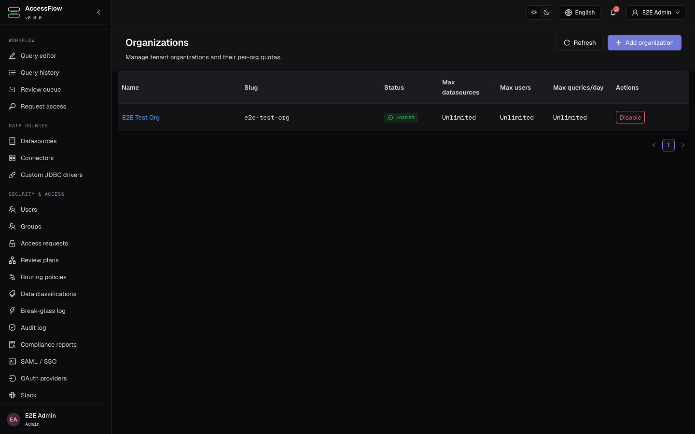
/admin/organizations — platform admins manage every tenant and its quotas from one screen.Configure it. Platform admins manage tenants and their quotas from
/admin/organizations:
- Create an organization. From
/admin/organizations, click New organization, give it a name (an optional URL-safe slug is derived from the name when blank), and optionally set quotas. The org starts enabled and empty — add its first admin and datasources afterwards. - Set per-org quotas. Cap how much a tenant may consume:
max datasources, max users, and max queries per day (a rolling
trailing-24-hour count). Leave a field blank or set it to
0for unlimited. Quotas are enforced when the resource is created — a breach is rejected with HTTP409 QUOTA_EXCEEDEDand a message naming the limit, so the datasource / user / query simply isn't created. - Edit name & quotas. Open
/admin/organizations/<id>to change the name or raise / lower a quota, and to see live usage bars (current count vs. limit) for each cap. - Disable a tenant. Use Disable as a kill-switch — its users are blocked at login (local and SSO) and every in-flight session stops on its next request. The block is immediate (no cache, no waiting for token expiry). Enable restores access.
Every organization action (create, update, disable, enable) is written to the audit log against the target org. Per-org login pages / SSO routing across multiple orgs are not yet available — see the roadmap.
Languages & localization
What it is. AccessFlow ships seven bundled interface languages — English, Español, Deutsch, Français, 简体中文, Русский, and Հայերեն. An org admin decides which of them users may choose, which one users start on, and which language the AI reviewer writes in.
Configure it. /admin/languages (admin-only) has three
controls: an available languages checklist (at least one required) that drives
the language switcher in the top bar; a default language select, narrowed to that
allow-list, applied to users who have not picked one; and an AI review language
select spanning all seven languages independently of the user allow-list. Saving
refreshes the top-bar switcher immediately.
Tune it. Users override the default themselves from the language switcher next to the theme toggle, and the choice persists to their profile. Any string missing from a translation falls back to English.
Users
What it is. The people who can sign in to AccessFlow and the role each one carries. Create accounts directly, or let SAML / OAuth users be auto-provisioned on first sign-in when SSO is enabled (see SAML and OAuth).
Configure it. Manage everyone from /admin/users:

/admin/users → Invite via email. Enter the recipient's email, pick a role, and AccessFlow emails a one-time signup link.- Invite via email (default). From
/admin/users, click Invite via email, fill in the recipient's email, optional display name, and role, then submit. AccessFlow generates a signup token and emails it; the link expires afterACCESSFLOW_SECURITY_INVITATION_TTL(default 7 days). - Create with a password. Use the dropdown next to the invite button → Create with password to provision a user directly. Useful when SMTP isn't configured yet, or when you want to seed an account synchronously.
- Edit or deactivate. Click any row to change the role or flip the active toggle. Deactivated users can't sign in but their audit trail is preserved.
- Pending invitations are listed below the user table; resend or revoke them from there.
Tune it. ACCESSFLOW_SECURITY_INVITATION_TTL (invite-link
lifetime, default P7D), ACCESSFLOW_SECURITY_PASSWORD_RESET_TTL
(reset-link lifetime, default PT1H), and
ACCESSFLOW_SECURITY_PASSWORD_RESET_RESET_BASE_URL (link base, default
http://localhost:5173).
User roles & RBAC
What it is. Role-based access control. Every user carries one org-wide role that caps what they can do; on top of it, per-datasource permissions decide which databases they may touch. Pick the lowest-privilege role that still lets someone do their job — and a user can never approve their own query, whatever their role.
Custom roles. Beyond the five built-in system roles, an admin can compose
custom roles on /admin/roles from a fixed catalog of functional
permissions (submit SELECT/DML/DDL, review queries, review access requests, manage
datasources, view the audit log, and so on) — e.g. a reviewer who may approve queries but
not manage users. The five system roles are immutable and behave exactly as the matrix
below; a custom role grants exactly the permissions you tick. Roles that are still
assigned to users cannot be deleted.
Configure it. Assign a system or custom role when you create or edit a
user on /admin/users; the matrix below is what each built-in role may do.
Platform admin is separate from the four roles. The
platform-admin capability is an orthogonal flag, not a
fifth role — a platform admin keeps whatever role their home org assigns and is
additionally allowed to manage organizations across the cluster
(/admin/organizations). It grants no extra capability inside any single org;
the matrix below still governs every tenant-scoped action.
| Capability | READONLY |
ANALYST |
REVIEWER |
ADMIN |
AUDITOR |
|---|---|---|---|---|---|
Submit SELECT queries | ✓ | ✓ | ✓ | ✓ | — |
Submit DML (INSERT / UPDATE / DELETE) | — | ✓ | ✓ | ✓ | — |
Submit DDL (CREATE / ALTER / DROP) | — | — | — | ✓ | — |
| View own query history | ✓ | ✓ | ✓ | ✓ | — |
| View all queries in the org | — | — | ✓ | ✓ | — |
| Approve / reject queries | — | — | ✓ | ✓ | — |
| Request time-bound datasource / API-connection access (JIT) | ✓ | ✓ | ✓ | ✓ | — |
| Review / approve access requests | — | — | ✓ | ✓ | — |
| Manage datasources | — | — | — | ✓ | — |
| Manage users | — | — | — | ✓ | — |
| Manage user groups | — | — | — | ✓ | — |
| Manage review plans | — | — | — | ✓ | — |
| View audit log | — | — | — | ✓ | — |
| Manage notification channels | — | — | — | ✓ | — |
| Configure AI | — | — | — | ✓ | — |
| Configure SAML / OAuth | — | — | — | ✓ | — |
| View / export compliance reports | — | — | — | ✓ | ✓ |
| View behavioural anomalies (UBA) | — | — | — | ✓ | ✓ |
| Acknowledge / dismiss anomalies | — | — | — | ✓ | — |
| Break-glass / emergency execution† | ✓ | ✓ | ✓ | ✓ | — |
| View break-glass log | — | — | — | ✓ | ✓ |
| Acknowledge break-glass events | — | — | — | ✓ | — |
† Break-glass / emergency execution is not granted by role — it is gated by a
separate per-user, per-datasource can_break_glass permission that an admin
grants explicitly (required for everyone, including admins; time-boxed). A user can
break glass only on a datasource they hold that grant for, and only for query types they
already have the capability for.
Which role for what. Use READONLY for people who only
need to look at production data (analysts, on-call engineers reading dashboards).
Use ANALYST for people who write data through reviewed queries.
Use REVIEWER for people who approve other users' queries — typically
senior engineers or DBAs. Use ADMIN for the platform-team operators who
configure the system itself. Use AUDITOR for a dedicated, read-only
compliance reviewer — it sees only the compliance dashboard (/admin/auditor):
pre-built PII/PCI/GDPR access and DDL/DELETE reports with signed PDF/CSV export, and
nothing else.
Datasource-level permissions. Role is the org-wide ceiling. On top of
it, every user needs an explicit per-datasource permission grant to
access a given database — it controls read / write / DDL per
datasource, row caps, allowed schemas / tables, and restricted columns (which are masked
as *** in SELECT results). See
docs/07-security.md
for the full authorization matrix.
Group-based access grants. Rather than a row per person, an admin can grant a user group access to a datasource or an API connector (same read / write / DDL / break-glass controls); every member inherits the grant, and adding someone to the group gives them access without a new grant. When a user has both a direct grant and one or more group grants, their effective access is the most-permissive union — capabilities are OR-ed, allow-lists merge, restricted-column masks apply only where every grant restricts, and each grant's expiry is honoured independently.
Just-in-time (JIT) access requests
Instead of an admin pre-granting a
permission, any user can request temporary, scoped access from
/access-requests — to a datasource (pick the capabilities they
need — read / write / DDL — and an optional schema/table scope) or to an API
connection (read / write plus an optional allow-list of specific operations from
the connector's schema catalog), with a duration. The request runs
through the same reviewer-eligibility and multi-stage approval engine as query review
(a requester can never approve their own); API-connection requests route through the
connector's assigned review plan. Admins are the backstop approver: an admin
sees and can approve every pending access request from
/admin/access-requests — even on resources with no review plan — so a
request is never stuck waiting for an approver who was never configured. On final
approval AccessFlow writes a time-boxed permission grant (expiring at
now + duration) — a datasource permission, or an API-connection permission
visible on the connector's Permissions tab alongside admin-granted rows; it's revoked
automatically on expiry, and an admin can revoke an
active grant early from /admin/access-requests. Tune the revocation cadence
with ACCESSFLOW_ACCESS_GRANT_EXPIRY_POLL_INTERVAL (default PT5M)
and the allowed duration window with ACCESSFLOW_ACCESS_MIN_DURATION /
ACCESSFLOW_ACCESS_MAX_DURATION (defaults PT15M / P30D).
A requester can additionally tick “Pre-approve queries under this grant” on the
request form (off by default): while such a grant is active, queries it covers —
matching capability and schema/table scope — skip human review entirely and are
auto-approved with the grant and its approver recorded on the query detail and in the
audit log. The flag is shown as a highlighted tag in the approval queue so the reviewer
sees exactly what they authorize; auto-reject and escalation routing policies, high-risk
AI verdicts, and open behavioural anomalies still override the fast-path.
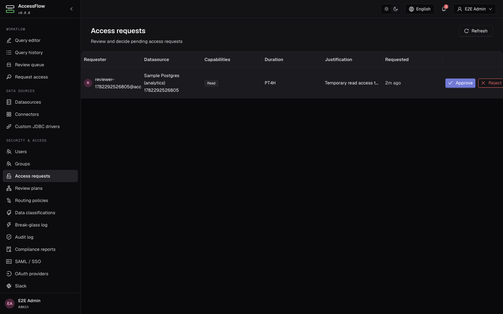
/admin/access-requests — pending JIT access requests; admins approve, reject, or revoke an active grant.Break-glass / emergency access
For genuine emergencies — production is
down and approvers are unreachable — an admin can grant a user the
can_break_glass permission on a datasource (a checkbox on the permission
grant, alongside read / write / DDL, time-boxed via the same expires_at).
With that grant, an Emergency access button appears on the editor for
that datasource: the user supplies a mandatory justification and the query
executes immediately, bypassing review — but still through every proxy
guard (schema/table allow-list, dynamic masking, row-level security, row caps). The grant
is required for everyone, including admins. Each break-glass execution fires
instant notifications to all admins (including PagerDuty), writes a prominently-tagged
QUERY_BREAK_GLASS_EXECUTED audit row, and opens a mandatory
retro-review on the /admin/break-glass log that an admin —
never the submitter — must acknowledge after the fact. The executed query keeps
its normal terminal state; the retro-review is tracked alongside it.
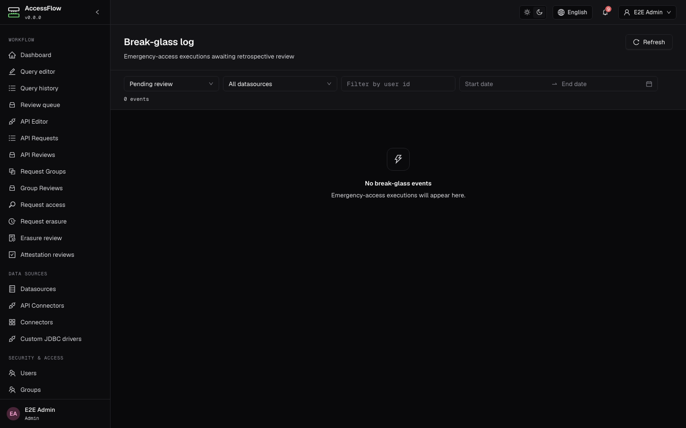
/admin/break-glass — every emergency execution opens a mandatory retro-review here for an admin (never the submitter) to acknowledge.User groups
What it is. Named, organisation-scoped collections of users. Use them to (1) bundle reviewers so you can attach a single group — instead of ten individual users — to a datasource as eligible reviewers, (2) grant a whole team data or API access (a datasource or API-connector grant on a group is inherited by every member, so you don't add a row per person), and (3) act as the target of IdP group mappings so SAML / OAuth2 logins keep membership in sync automatically.
Configure it. Manage groups from /admin/groups:
- Create a group. Go to
/admin/groups→ Create group. Pick a name (e.g. Billing Reviewers) and an optional description. - Add members. Open the group, click Add member, and pick users from the dropdown. Manually-added members are tagged Manual and stay put regardless of the IdP sync.
- Use the group. On a datasource's Reviewers tab
(
/datasources/<id>/settings), add the group as a reviewer. From that point on, members of the group can see and decide queries against that datasource (in addition to plan-approver rules). On the same page's Permissions tab (and an API connector's Permissions tab) you can also grant the group access — switch the grant target from User to Group and every member inherits the read / write / DDL / break-glass grant. - Optional: IdP-managed memberships. Configure
group_mappingson the SAML or OAuth2 admin pages so an IdP group claim auto-maps to the AccessFlow group. On every login, AccessFlow replaces the user's IdP-sourced memberships with the mapped set; Manual memberships are never touched.
Per-datasource reviewer scoping. Once a datasource has at least one assigned reviewer (a user or a group), only those reviewers see its queries. Datasources with none fall back to the review-plan approvers — so adopting groups is purely additive, no migration required.
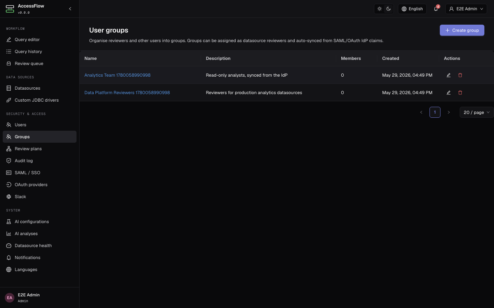
/admin/groups — organisation-scoped user groups; open one to manage members.Datasources
What it is. A governed connection to one of your databases. Every query a user runs against it passes through AccessFlow's review, masking, and row-security guards instead of hitting the database directly — so a datasource is where you decide who may run what against which data. PostgreSQL, MySQL, MariaDB, Oracle, and MS SQL Server are built in; MongoDB, Couchbase, Redis, Cassandra / ScyllaDB, Elasticsearch / OpenSearch, DynamoDB, Neo4j, Snowflake, BigQuery, and Databricks install from the connector catalog; any other JDBC engine works by uploading its driver and choosing Custom.
Configure it. Create one with the four-step wizard at
/datasources/new:

/datasources/new — four-step wizard: Database type → Connection details → Connection test → Configuration.- Database type. Pick a bundled driver tile (PostgreSQL ships built-in; other drivers download on first use and are verified against a pinned SHA-256 checksum). Pick Custom to use a JDBC driver you uploaded under Admin → Custom JDBC drivers.
- Connection details. Name the datasource, then enter host, port, database name, service-account username, and password. SSL mode defaults to
REQUIRE; switch toVERIFY_FULLin production. For Cassandra and ScyllaDB the wizard also requires a local datacenter (the driver's load-balancing datacenter); this field is unused for every other engine. For Elasticsearch and OpenSearch the wizard offers an Authentication toggle — basic (username + password) or an API key — and the database-name field is optional. For Amazon DynamoDB the connection is cloud credentials, not host/port: the wizard hides host/port and instead asks for the AWS region (the database-name field), the access key ID and secret access key (the username/password fields), and an optional custom endpoint (DynamoDB Local / VPC; blank for AWS). For Neo4j the wizard takes the standard host/port/database/username/password (the SSL mode is encoded in the Bolt scheme) plus an optional Bolt connection URI (advanced) — a fullbolt:///neo4j+s://URI for Neo4j Aura or clustered routing that, when set, overrides host/port. For Snowflake the wizard asks for the account host (<account>.snowflakecomputing.com; the port field is hidden — always 443), the database, the user, a credential that is either a password or an unencrypted PKCS#8 private key (PEM) for key-pair authentication, and an optional JDBC URL override — a fulljdbc:snowflake://URL carrying warehouse / role / schema parameters. For Google BigQuery the connection is cloud credentials: the wizard hides host/port/username and asks for the GCP project (optionallyproject.datasetto pin a default dataset) and the service-account key JSON, plus an optional custom endpoint (BigQuery emulator). For Databricks SQL the wizard asks for the workspace host, the required warehouse HTTP path (/sql/1.0/warehouses/<id>from the warehouse's connection details), an optional Unity Catalog catalog, and a personal access token. The password (and API key / secret access key) are AES-256-GCM encrypted on write, decrypted once into the connection pool, and never returned in any GET response. When an external secrets manager is enabled (see Run & deploy), any credential field also accepts a secret reference —vault:<mount>/<path>#<field>,aws:<name-or-arn>[#jsonField], orazure:<secret-name>— stored as-is and resolved through the store at connection time; the form shows the syntax hints for whichever providers are enabled. - Connection test. AccessFlow opens a real JDBC connection, runs a heartbeat query, and surfaces any SSL / authentication errors before you save.
- Configuration. Pick the Review plan that gates this datasource, toggle Require review on reads / writes, and (optionally) enable AI analysis and/or text-to-query + pick an AI configuration. The AI configuration is shared by both features, so it is required whenever either toggle is on. With text-to-query on, users can draft a query from a natural-language prompt in the editor — in the engine's native query language (SQL or a NoSQL query) — and the draft still flows through the normal review pipeline. Pool size, max rows, and statement timeout default sensibly but can be tightened per datasource.
Read replicas & load balancing (optional). On the datasource
settings page, the Read replicas card takes any number of replica endpoints
(JDBC URL plus optional username and password per endpoint — blank credentials reuse
the primary's). AccessFlow opens one connection pool per endpoint and load-balances
every query classified as SELECT round-robin across the healthy replicas;
INSERT / UPDATE / DELETE / DDL and transactional BEGIN … COMMIT batches
always hit the primary. Replicas must use the same database engine as the primary
(they reuse the primary's JDBC driver), and credentials are AES-256-GCM encrypted with
the same ENCRYPTION_KEY. Per-node health checks (a background prober plus
a circuit breaker) take a failed endpoint out of rotation for a cooldown
(ACCESSFLOW_PROXY_REPLICA_COOLDOWN, default 30s) and its health shows on
the Datasource health dashboard; only when every replica is down does the
read fall back to the primary, with one DATASOURCE_REPLICA_FALLBACK audit
row visible at /admin/audit-log. Click Test replica on any row
to validate its URL + credentials live without persisting; leaving the password blank
reuses that endpoint's saved password. Remove every endpoint to disable replica
routing. Replica pools reuse the same ACCESSFLOW_PROXY_* connection-pool
tuning as the primary; the health checks are tuned by the
ACCESSFLOW_PROXY_REPLICA_* variables.
SELECT result caching (optional). The settings page's
Performance card opts a datasource into a Redis-backed result cache for
repeated identical SELECTs, with a per-datasource TTL (1–86,400 seconds;
blank uses ACCESSFLOW_PROXY_CACHE_DEFAULT_TTL, default 60s). Caching is
security-safe by construction — entries are keyed over the row-security-rewritten
query and the caller's masking scope, so masking and row-level security always apply —
and any write executed through AccessFlow to a referenced table (including GDPR
erasure and retention deletes) immediately invalidates the affected entries. Note that
writes made outside AccessFlow are invisible to the cache and are served
stale until the TTL expires, so pick a TTL that matches how the datasource is written.
ACCESSFLOW_PROXY_CACHE_ENABLED=false switches the feature off
deployment-wide.
Grant a user access. Open the datasource → Permissions tab and add a row per user — can read / can write / can DDL, allowed schemas, allowed tables, and restricted columns (masked as *** in SELECT results). Without a permission row, a user can't see or query the datasource at all. The allowed schemas / allowed tables lists are enforced when a query is submitted: every table it references — across joins, subqueries, CTEs, and BEGIN; …; COMMIT; batches — must appear in allowed tables or live in an allowed schema, or the query is rejected before it runs. Matching is case-insensitive, and an unqualified table name (FROM users) only matches an unqualified entry in allowed tables. Leave both fields empty to allow every table.
Schema explorer & ER diagram. Each datasource also carries
Schema and ER diagram tabs alongside Configuration /
Permissions. The schema view introspects the live database (cached and
refreshable from the UI) and renders a searchable object tree — one
filter matches across schema, table, and column names. Click any table to open a
sample-data preview: a small, read-only set of rows fetched through the
same governance path as a real query, so row-level security filters the rows and column
masking redacts sensitive values (masked columns show ***, never the raw
value). The same searchable tree and preview are available in the query editor sidebar.
The ER tab lays those tables out as a node-and-edge graph with PK/FK badges and column
types so reviewers and operators can sanity-check what a query is touching without
leaving AccessFlow.
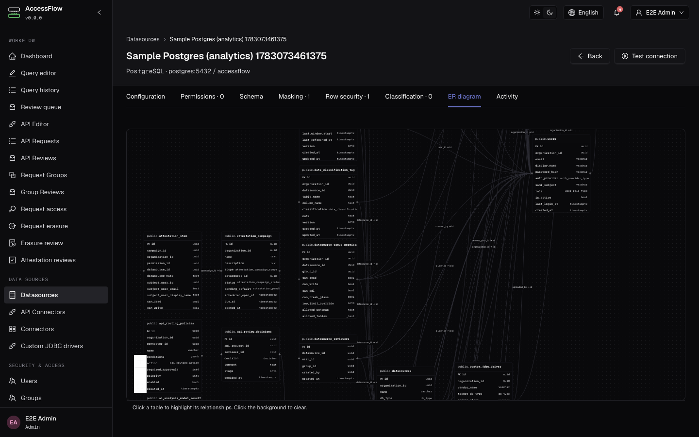
/datasources/<id>/settings → ER diagram. Auto-laid-out via dagre; node positions persist after manual edits.
Masking policies. The datasource Masking tab adds per-column
dynamic data masking on top of the static restricted-columns masking above. Each
policy targets a schema.table.column and picks a strategy —
full (***), partial (keep the last N characters),
hash (stable SHA-256), email (j***@domain), or
format-preserving — with an optional reveal-to condition. A query
submitter whose role, group, or user id is listed in reveal to sees the unmasked
value; everyone else sees the strategy output. A live preview shows how a sample value will
render. Masking is applied at result-read time before results are serialized or stored, so
unmasked values never persist, and the ids of the policies that applied are recorded in the
execution's audit metadata. Reveal is explicit — there is no implicit admin bypass.
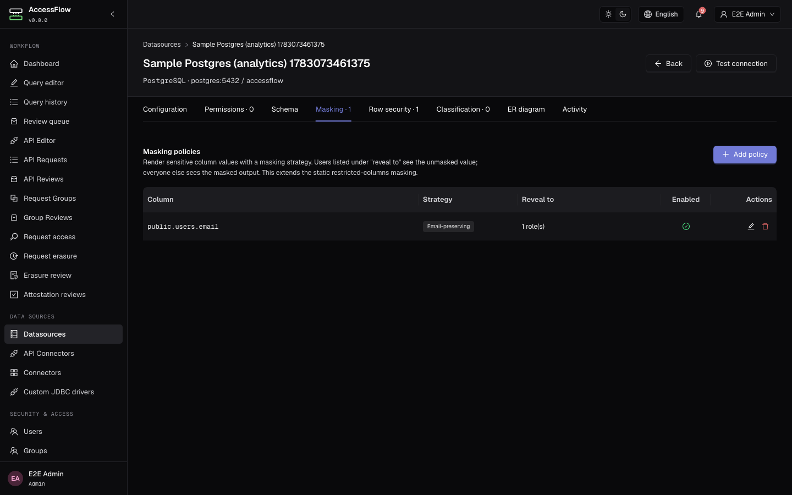
/datasources/<id>/settings → Masking. Per-column dynamic masking with role / group / user reveal conditions.
Row security policies. The datasource Row security tab adds
row-level security: per-table predicates the proxy injects into the parsed SQL so a
scoped user only sees (SELECT) or affects (UPDATE/DELETE) the rows they are authorised for.
Each policy is a structured column operator value predicate where the value is a
fixed literal or a :user.* variable — the built-in
:user.id / :user.email / :user.role /
:user.groups, or an admin-set per-user attribute (the Attributes
key/value editor on Admin → Users). The applies to roles / groups / users
scope it (empty = everyone, no implicit admin bypass — the inverse of masking's
reveal to). Values are bound as parameters, never concatenated; an unresolved
variable filters out every row (fail-closed); and a query the engine can't safely rewrite
(a policied table inside a UNION, CTE, sub-select, or join-onto-another-policied-table) is
rejected rather than run unfiltered. Applied policy ids are recorded in the execution's audit
metadata.
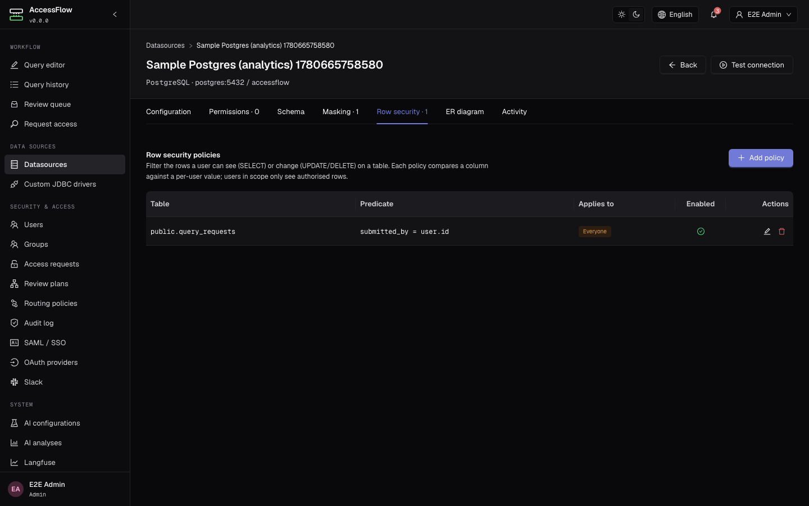
/datasources/<id>/settings → Row security. Per-table predicates injected into the parsed SQL; values bound as parameters.Data classification
The datasource Classification tab tags
tables and columns with one or more data classifications — PII, PCI,
PHI, GDPR, FINANCIAL, or SENSITIVE — and
derives stricter handling automatically. Tagging a column
auto-applies a masking policy from the classification's default strategy
(PII / GDPR / FINANCIAL → partial, PCI / PHI → full, SENSITIVE → hash), so you don't
hand-configure masking for every sensitive field; a table-level tag (no column) is
informational. A query that references a tagged table gets an automatic AI risk-score
bump, and a derivation preview suggests a stricter review posture (AI review,
human approval, minimum approvals) aggregated across the datasource's tags — a suggestion
you apply on the datasource's review plan, never auto-changed. Tags are immutable
(create / delete) and audited; deleting a tag keeps the masking policy it derived. The
classifications appear as badges in the schema explorer, and Admin → Data
classifications (/admin/data-classifications) lists every tag across all
datasources as the evidence base for compliance reporting.
Tune it. Per-datasource fields above set row caps and review behaviour; these environment variables set the engine-level connection and execution ceilings (defaults shown):
- Connection pools (all JDBC engines):
ACCESSFLOW_PROXY_CONNECTION_TIMEOUT(30s),ACCESSFLOW_PROXY_IDLE_TIMEOUT(10m),ACCESSFLOW_PROXY_MAX_LIFETIME(30m),ACCESSFLOW_PROXY_LEAK_DETECTION_THRESHOLD(0s= off). - Statement execution (all engines):
ACCESSFLOW_PROXY_EXECUTION_MAX_ROWS(10000),ACCESSFLOW_PROXY_EXECUTION_STATEMENT_TIMEOUT(30s),ACCESSFLOW_PROXY_EXECUTION_DEFAULT_FETCH_SIZE(1000),ACCESSFLOW_PROXY_EXECUTION_INSERT_BATCH_CHUNK_SIZE(1000). - Heap protection (relational engines):
ACCESSFLOW_PROXY_EXECUTION_MAX_RESULT_BYTES(52428800— per-result byte cap; larger SELECT results are truncated),ACCESSFLOW_PROXY_EXECUTION_MAX_CONCURRENT(32— global in-flight execution budget across all datasources),ACCESSFLOW_PROXY_EXECUTION_ACQUIRE_TIMEOUT(5s— wait before overflow executions are rejected with HTTP 503). - SELECT result cache:
ACCESSFLOW_PROXY_CACHE_ENABLED(true),ACCESSFLOW_PROXY_CACHE_DEFAULT_TTL(PT60S),ACCESSFLOW_PROXY_CACHE_MAX_ENTRY_BYTES(1000000). - Read-replica health checks:
ACCESSFLOW_PROXY_REPLICA_PROBE_INTERVAL(PT30S),ACCESSFLOW_PROXY_REPLICA_PROBE_TIMEOUT(PT5S),ACCESSFLOW_PROXY_REPLICA_COOLDOWN(PT30S). - MongoDB:
ACCESSFLOW_PROXY_MONGO_CONNECT_TIMEOUT(PT10S),…_SERVER_SELECTION_TIMEOUT(PT10S),…_MAX_POOL_SIZE(10). - Couchbase:
ACCESSFLOW_PROXY_ENGINES_COUCHBASE_CONNECT_TIMEOUT(PT10S),…_WAIT_UNTIL_READY_TIMEOUT(PT10S),…_SCAN_CONSISTENCY(request-plus). - Redis:
ACCESSFLOW_PROXY_ENGINES_REDIS_CONNECT_TIMEOUT(PT5S),…_SOCKET_TIMEOUT(PT5S),…_MAX_POOL_SIZE(10). - Cassandra / ScyllaDB:
ACCESSFLOW_PROXY_ENGINES_CASSANDRA_CONNECT_TIMEOUT/…_SCYLLADB_CONNECT_TIMEOUT(PT10S) and the matching…_REQUEST_TIMEOUT(PT10S). - Elasticsearch / OpenSearch:
ACCESSFLOW_PROXY_ENGINES_ELASTICSEARCH_CONNECT_TIMEOUT/…_OPENSEARCH_CONNECT_TIMEOUT(PT10S) and…_SOCKET_TIMEOUT(PT30S). - DynamoDB:
ACCESSFLOW_PROXY_ENGINES_DYNAMODB_CONNECT_TIMEOUT(PT10S),…_API_CALL_TIMEOUT(PT30S). - Neo4j:
ACCESSFLOW_PROXY_ENGINES_NEO4J_CONNECT_TIMEOUT(PT10S),…_MAX_CONNECTION_POOL_SIZE(100). - Snowflake:
ACCESSFLOW_PROXY_ENGINES_SNOWFLAKE_LOGIN_TIMEOUT(PT30S),…_NETWORK_TIMEOUT(PT60S). - BigQuery:
ACCESSFLOW_PROXY_ENGINES_BIGQUERY_CONNECT_TIMEOUT(PT10S),…_READ_TIMEOUT(PT30S). - Databricks:
ACCESSFLOW_PROXY_ENGINES_DATABRICKS_CONNECT_TIMEOUT(PT10S),…_WAIT_TIMEOUT(PT10S),…_POLL_INTERVAL(PT1S).
API connectors
What it is. API Access Governance lets you govern outbound API
calls — REST, SOAP, GraphQL, and gRPC — with the same review, approval, and audit machinery
as a database query. An API connector (/api-connectors) is a registered
API target: a base URL, a protocol, and an authentication method.
Configure it (admin). Create a connector with a base URL, protocol, and an
auth method — None, API key, Bearer token, Basic,
OAuth2 client-credentials, Custom header, or mTLS. Secrets are
AES-256-GCM encrypted at rest and never returned. For OAuth2 client-credentials,
AccessFlow fetches, caches, and refreshes the upstream access token itself — configure the
token endpoint, client ID/secret, scopes, audience, grant type (client-credentials,
refresh-token, or resource-owner password), and client-auth method (Basic header or POST
body); the token is reused across calls and refreshed on expiry or a 401, so no token needs
to be pasted by hand. Define default headers sent on every governed call (users see
them but cannot change them) and, optionally, rename the trace-context header keys
AccessFlow uses to propagate W3C traceparent. Optionally upload a schema
(OpenAPI / WSDL / GraphQL SDL / gRPC .proto, or a Postman Collection v2.1
export) by pasting it, dragging a file in, or
pointing at a URL to fetch; AccessFlow parses it into a normalized operation catalog with
read/write classification. A Postman collection is handy when a team has no OpenAPI
document — folders flatten into operation ids and {{variables}} become path
templates. Two caveats it states at upload time: Postman stores examples, not
schemas, so request/response shapes are inferred and less precise; and any
credentials in your export are ignored and never stored — re-enter them in the
connector's authentication settings above. Pre-request and test scripts in the export are
dropped entirely. An optional import filter keeps the ungovernable parts
of a real-world spec out of that catalog: exclude (or restrict to) path globs such as
/internal/**, exclude HTTP verbs, operation-id globs, OpenAPI tags, and
deprecated operations. Preview shows exactly which operations a pattern drops
before you commit, the schema list reports "keeps N of M", and the filter stays editable
afterwards without re-uploading the document. Filtered-out operations are unreachable
everywhere — the API editor, text-to-API, and the per-user allowed-operations picker.
Set the review plan, AI-analysis toggle + AI config, text-to-API
toggle, require-review-on-reads/writes, and the max response size (default 10 MiB —
the full response is stored and downloadable up to this cap, with only a bounded preview
shown inline). A Test connection
button probes reachability (and, for OAuth2 connectors, exercises the token fetch).
Share with the team. Grant per-user access on a connector (can read / can write / can break-glass, an optional expiry, an allowed-operations subset, and response fields to mask). Users see only the connectors they are granted.
Mask & classify responses. On the connector's Masking and Classification tabs (admin), define connector-level masking policies that redact response fields before the snapshot is stored. Because API responses aren't columnar, a policy targets a field four ways — a schema field (operation + field from the parsed catalog), a JSON path, an XML path (XPath), or a regex — each with a masking strategy (full, partial, hash, email, format-preserving) and role / group / user reveal scoping (a requester in a reveal list sees the unmasked value; no implicit admin bypass). Data-classification tags (PII, PCI, PHI, GDPR, FINANCIAL, SENSITIVE) on a field auto-derive a masking policy and raise the AI risk score for calls to the operation, with a derivation preview of the suggested handling. Masking is applied once, before storage, so raw values never persist, and the policy ids that applied are recorded in the execution audit.
Dynamic variables (request signing). Some APIs — common in banking, payments
and telco — require a value computed per request: an HMAC signature, a nonce, a
timestamp, an idempotency key. A requester can't hand-compute those for a governed call,
because the signature covers a body a reviewer approves minutes or hours later and the
timestamp would already be stale. On the connector's Variables tab (admin) you
declare named values that AccessFlow computes at execution time and substitutes into
headers, the path, query parameters and the body wherever
{{name}} appears. Kinds cover a constant, a random UUID, a timestamp, epoch
milliseconds, random bytes, a hash (SHA-256/MD5), an HMAC signature (HMAC-SHA256/512 with an
encrypted shared secret), or a re-encoding — output as hex, base64 or URL-safe base64.
Expressions can reference the in-flight request ({{request.method}},
{{request.path}}, {{request.query}}, {{request.body}},
{{request.headers.Authorization}}) and each other; AccessFlow resolves them in
dependency order and rejects circular references while you're editing, not at run time.
Variables are evaluated after authentication, so a signature can cover the resolved
Authorization header — including a freshly minted OAuth2 token. Instead of a
placeholder, a variable can inject itself straight into a fixed header or query parameter.
Evaluation is template substitution over a fixed function set only: there is no scripting
engine and no user-supplied code. Shared secrets are encrypted at rest, never returned by
the API, and computed values are never stored, snapshotted or logged.
Per-request overrides. An admin can mark a variable overridable, and grant selected teammates the Override variables permission on the connector. Those requesters can then supply their own value for that variable from the API editor's Variables tab — pinning a nonce for a replay test, say. Overrides are deny-by-default and deliberately narrow: a variable holding a secret can never be made overridable, an override is inserted literally and can never expand into another variable's value, and the values are saved with the request and shown to the reviewer, so an approval covers exactly what will be sent.
Use it. In the API editor (/api-editor) a user picks a
connector, searches the operation catalog (or writes a free-form method + path), and composes
the call like Postman — query parameters, custom headers (over the connector's read-only
default headers), and a body that can be raw, x-www-form-urlencoded, multipart
form-data, or a binary file upload. A user can schedule the call for later, sees a debounced
AI risk preview, and submits. Plain-English text-to-API drafts a call for
schema-backed connectors. Every call flows through AI risk scoring → routing → human review
(no self-approval) → guarded execution that injects the connector's auth and a W3C
traceparent, caps and field-masks the response, and stores an immutable response
snapshot. The full stored response can be downloaded in its original format, and the request
list is filterable by submitter, trace id, and span id. Break-glass and scheduled execution
mirror the query path. Note: gRPC connectors register and review today; gRPC call
execution is a follow-up — REST/SOAP/GraphQL execute fully.
Connectors
What it is. The catalog of databases AccessFlow can talk to, and the
one-click way to enable them. Use it to turn on support for an engine before you add a
datasource for it — so the image doesn't have to ship every database driver. The
Admin → Connectors marketplace (/admin/connectors) groups the
SQL (relational) family separately from the NoSQL family.
Configure it. Click Install on a connector card; AccessFlow downloads its driver, verifies it against a pinned checksum, and caches it. PostgreSQL ships Installed; everything else — MongoDB, Couchbase, Redis, Cassandra, ScyllaDB, Elasticsearch, OpenSearch, Amazon DynamoDB, Neo4j, Snowflake, BigQuery, Databricks, and the other SQL drivers — shows an Install action.
Built-in connectors — SQL:
- PostgreSQL — bundled (ships in the image, no download).
- MySQL —
com.mysql:mysql-connector-j· 1-click install. - MariaDB —
org.mariadb.jdbc:mariadb-java-client· 1-click install. - Oracle Database —
com.oracle.database.jdbc:ojdbc11· 1-click install. - Microsoft SQL Server —
com.microsoft.sqlserver:mssql-jdbc· 1-click install. - ClickHouse —
com.clickhouse:clickhouse-jdbc· 1-click install (a CUSTOM-dialect connector, the first engine beyond the built-in five).
Built-in connectors — NoSQL:
- MongoDB — native engine plugin (not JDBC) · 1-click install; the engine downloads on demand like a JDBC driver and is cached in the same driver-cache directory (pre-seed it for air-gapped installs). Users write queries in the mongo shell form (
db.users.find({ … })) or a JSON command document, chosen in the editor; results show in both a JSON document view and a flattened table. AI risk analysis, human approval, row-level security ($matchinjection), and field masking all apply. Configure it with the standard host/port/database/username/password/SSL fields. - Couchbase — native engine plugin (not JDBC) · 1-click install; same on-demand download/verify/cache model as MongoDB. Users write SQL++ (N1QL) statements with SQL-style highlighting and formatting in the editor; results show in both a table and a JSON document view. AI risk analysis, human approval, row-level security (predicates ANDed into the WHERE clause with parameter binding; unrewritable shapes rejected), and field masking all apply;
CURL(), JavaScript UDFs, andsystem:*keyspaces are rejected up front. The database field holds the bucket; plain connections bootstrap on port 11210 (couchbase://), TLS on 11207 (couchbases://) — pick the matching port or use a connection-string override. - Redis — native key-value engine plugin (not JDBC) · 1-click install; same on-demand download/verify/cache model as MongoDB. Users submit redis-cli commands (
GET user:42,HGETALL session:abc,SCAN 0 MATCH orders:* COUNT 100,SET,DEL) classified onto the same approval workflow; server-side scripting and blast-radius commands (EVAL,CONFIG,FLUSHALL,SHUTDOWN) are rejected at submission. Field masking applies to returned hash fields / values; row-security policies on a Redis datasource fail closed (row predicates have no key-value meaning). The database field holds the numeric DB index (default0); plain connections use port 6379 (redis://), TLS usesrediss://. - Apache Cassandra — native wide-column engine plugin (not JDBC) · 1-click install; same on-demand download/verify/cache model as MongoDB. Users write CQL statements classified onto the same approval workflow (SELECT / INSERT / UPDATE / DELETE plus
CREATE/ALTER/DROPof table/keyspace/index/type/materialized-view andTRUNCATE); server-side code (BEGIN … BATCH,CREATE/DROP FUNCTION/AGGREGATE) is rejected up front. Row-level security is key-aware and fails closed — predicates splice into the WHERE clause only on partition/clustering key columns with CQL-filterable operators (=, IN, <, <=, >, >=); a non-key column,!=/NOT IN, or INSERT into a policied table is rejected rather than injectingALLOW FILTERING. Field masking applies to returned columns. The database field holds the keyspace; the per-datasource local datacenter field is required (the driver's load-balancing datacenter). Default port 9042. - ScyllaDB — native wide-column engine plugin (not JDBC) · 1-click install; CQL-compatible and served by the same engine plugin as Apache Cassandra. Identical governance: CQL classification, key-aware fail-closed row-level security, field masking, and rejected server-side code. The database field holds the keyspace; the per-datasource local datacenter field is required. Default port 9042.
- Elasticsearch — native search engine plugin (not JDBC) · 1-click install; same on-demand download/verify/cache model as MongoDB. Users write a JSON query envelope (
{"search":"logs-*","query":{…}}, pluscount,get/mget,index/bulk,update_by_query/delete_by_query, and index management) classified onto the same approval workflow; server-side scripting (script,runtime_mappings, Painless) and cluster/system-index APIs are rejected up front. Row-level security injectsbool.filterclauses on keyword fields (fail-closed on writes into a policied index), and field masking applies recursively to_sourcefields including nested dot-paths. Authenticate with basic auth (username + password) or an API key — pick the method in the connection wizard. The database field is optional (it only scopes introspection — the index is named in the query). Default port 9200, SSLREQUIRE. - OpenSearch — native search engine plugin (not JDBC) · 1-click install; wire-compatible and served by the same engine plugin as Elasticsearch. Identical governance: JSON query envelope classification,
bool.filterrow-level security on keyword fields, nested field masking, rejected scripting/cluster APIs, and basic-or-API-key auth. The database field is optional. Default port 9200. - Amazon DynamoDB — native key-value engine plugin (not JDBC) · 1-click install; same on-demand download/verify/cache model as MongoDB (AWS SDK for Java v2 over the url-connection HTTP client — no Netty). Users write PartiQL (
SELECT/INSERT/UPDATE/DELETE), and table management arrives as a JSON command document ({"CreateTable": {…}},DeleteTable,UpdateTable); transaction/batch statements are rejected. Row-level security splices predicates into the PartiQL WHERE clause with parameter binding on any attribute (DynamoDB filters via Scan), failing closed on INSERT-into-policied and deny-all; field masking applies recursively by dot-path including nested maps/lists. Its connection is cloud credentials + region, not host/port: the database field holds the AWS region, the username/password hold the access key id / secret access key, and an optional custom endpoint targets DynamoDB Local / VPC. Default port 8000 (DynamoDB Local; AWS uses the SDK regional endpoint). - Neo4j — native graph engine plugin (not JDBC) · 1-click install; same on-demand download/verify/cache model as MongoDB (native Neo4j Java driver over the Bolt protocol). Users write Cypher; the query type is the strongest write clause present (
DELETE/REMOVE→ DELETE,CREATE/MERGE→ INSERT,SET→ UPDATE, else aMATCH … RETURN/SHOWread → SELECT), with index / constraint / database / role schema commands as DDL.LOAD CSV, procedure calls outside a read-only allow-list, and multi-statement input are rejected. Row-level security ANDs property predicates onto eachMATCH'sWHEREwith parameter binding (node-label policies), failing closed on anonymous or write-creates-policied-label shapes; field masking is label-aware and recursive. Connection is host/port + database (the Neo4j database, required) with the SSL mode encoded in the Bolt scheme, or a fullbolt:///neo4j+s://URI in the optional Bolt connection URI field (Neo4j Aura / clustered routing). Default port 7687 (Bolt).
Built-in connectors — Cloud data warehouses:
- Snowflake — native warehouse engine plugin · 1-click install; same on-demand download/verify/cache model as MongoDB (the plugin bundles the Snowflake JDBC driver but opens a short-lived connection per request — warehouse sessions are billed while resumed, so nothing is pooled). Users write Snowflake SQL classified onto the same approval workflow;
CALL,EXECUTE IMMEDIATE, scripting blocks,COPY INTO,PUT/GET,USE, andSHOWare rejected up front. Row-level security splices predicates into the WHERE clause with parameter binding (fail-closed on CTE / subquery / JOIN / set-operation shapes), and field masking applies to returned columns. Connection is the account host + database + user, with a credential that is a password or an unencrypted PKCS#8 private key (key-pair authentication), plus an optional fulljdbc:snowflake://URL for warehouse / role / schema parameters. Port is unused (HTTPS 443). - Google BigQuery — native warehouse engine plugin (not JDBC) · 1-click install; same on-demand model (Google Cloud HTTP/JSON client). Users write GoogleSQL; scripting (
BEGIN/DECLARE/CALL/EXECUTE IMMEDIATE),EXPORT DATA, andLOAD DATAare rejected up front. Row-level security splices positional-parameter predicates into the WHERE clause (same fail-closed shapes), and field masking applies recursively by dot-path across nested RECORD fields. Its connection is cloud credentials, not host/port: the database field holds the GCP project (optionallyproject.datasetto pin a default dataset) and the credential is the service-account key JSON; an optional custom endpoint targets the BigQuery emulator. - Databricks SQL — native warehouse engine plugin (not JDBC, no vendor SDK) · 1-click install; the engine talks to the SQL Statement Execution REST API. Users write Databricks SQL;
USE,SET,COPY INTO,CALL, and maintenance commands (OPTIMIZE,VACUUM,ANALYZE) are rejected up front. Row-level security splices named-parameter predicates into the WHERE clause (same fail-closed shapes), and field masking applies to returned columns. Connection is the workspace host + a required warehouse HTTP path (/sql/1.0/warehouses/<id>) + a personal access token, with an optional Unity Catalog catalog in the database field. Port is unused (HTTPS 443).
Adding a new database to the catalog is a data change, not a code change — see the connectors design doc if you want to contribute one.
- Install. Click Install on a connector card. The driver is fetched from the configured Maven repository (
ACCESSFLOW_DRIVERS_REPOSITORY_URL), SHA-256-verified, and cached toACCESSFLOW_DRIVER_CACHE. - Use it. Installed connectors appear in the datasource create wizard. The five core engines are first-class database types; additional engines (e.g. ClickHouse) are created as a Custom datasource backed by the connector — you fill in host / port / database and AccessFlow builds the JDBC URL from the connector's template.
- Air-gapped. Pre-seed the driver cache and set
ACCESSFLOW_DRIVERS_OFFLINE=true; connectors whose JAR isn't cached then report Unavailable.
Custom JDBC drivers
What it is. The escape hatch for any JDBC database not in the connector catalog. Upload its driver JAR and datasources can bind to it by choosing Database type → Custom in the create wizard.
Configure it. Manage uploads at /admin/drivers:
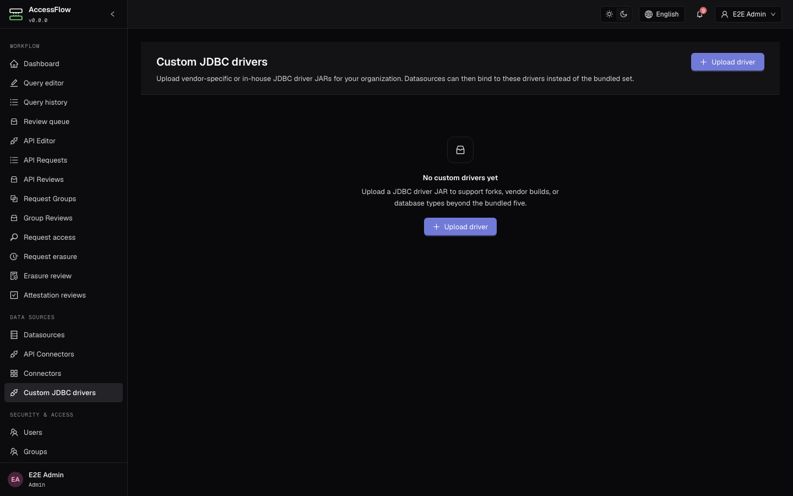
/admin/drivers — manages the per-org JDBC driver registry.- Upload driver. Click Upload driver, attach the JAR, and supply the vendor name, target database type, the driver class identifier shown in the vendor's documentation, and the expected SHA-256 checksum.
- Verification. The checksum is re-verified every time a pool initializes; uploaded drivers are loaded in isolated runtimes to keep providers from interfering with each other.
- On-disk cache. JARs cache to
ACCESSFLOW_DRIVER_CACHE(default~/.accessflow/drivers). Mount it as a persistent volume in Kubernetes so pods don't re-download on restart, and setACCESSFLOW_DRIVERS_OFFLINE=truefor air-gapped installs.
Review plans
What it is. The approval policy attached to a datasource — it decides how a submitted query gets from "submitted" to "executed". Use it to require AI scoring, one or more human sign-offs, or both, and to auto-approve low-risk reads. Each plan is a sequence of stages; each stage names approvers (by role or specific user) and a minimum number of approvals before the query advances.
Configure it. Build plans at /admin/review-plans — start
from a built-in template or from scratch:
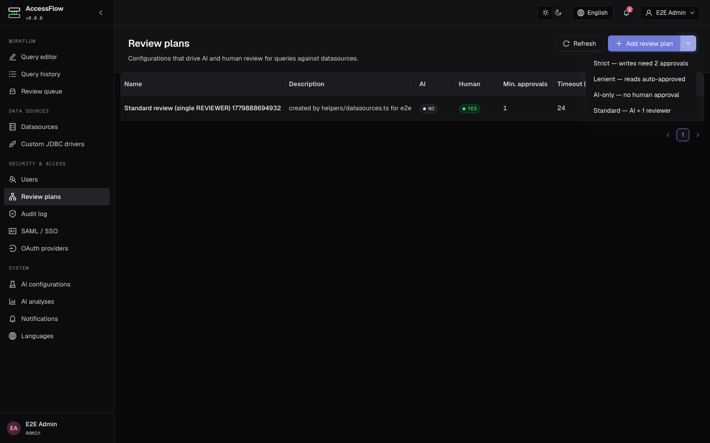
/admin/review-plans → caret next to Add review plan exposes four built-in templates that prefill the create modal.
/admin/review-plans → Add review plan. Stack approver rows to build multi-stage chains.- Open
/admin/review-plansand click Add review plan, or pick a built-in template from the dropdown caret next to it (Strict — writes need 2 approvals, Lenient — reads auto-approved, AI-only — no human approval, Standard — AI + 1 reviewer) to prefill the modal with sensible defaults. - Name and describe the policy — e.g. "Production writes — two reviewers".
- Pick the gates. Toggle Require AI review to score every query before it queues for humans; toggle Require human approval to demand at least one reviewer sign-off. Auto-approve LOW-risk reads lets
SELECTs skip humans entirely when AI risk is below the threshold. - Set thresholds. Minimum approvals is the number of distinct reviewers needed before the query advances; Approval timeout (hours) is when AccessFlow auto-rejects an idle
PENDING_REVIEWquery (it scans on a cadence set byACCESSFLOW_WORKFLOW_TIMEOUT_POLL_INTERVAL, defaultPT5M). - Build the approver chain. Click Add approver for each stage; each row names a role (or a specific user) and a stage number. Stages advance sequentially, and a single REJECTED decision at any stage terminates the query.
Reviewer decisions. Reviewers can Approve, Reject, or
Request changes. Reject and Request changes both require a
non-empty comment — the server enforces this (HTTP 400 VALIDATION_ERROR),
and the UI disables the confirm button until the textarea is populated. The comment is
persisted on the decision row, rendered on the rejected stage of the timeline on
/queries/<id>, and surfaced to the submitter as a "Changes requested"
alert whenever the latest decision is REQUESTED_CHANGES and the query is
still PENDING_REVIEW. Approve still treats the comment as
optional.
Query status transitions. A query moves through these states:
PENDING_AI → PENDING_REVIEW → APPROVED → EXECUTED
↘ REJECTED (manual reviewer rejection)
↘ TIMED_OUT (approval-timeout auto-reject)
PENDING_REVIEW → CANCELLED (submitter only)
APPROVED → FAILED (execution error)
A single REJECTED decision at any stage terminates the query. If a query
sits in PENDING_REVIEW past the plan's approval timeout, AccessFlow
auto-rejects it (it scans on a cadence set by
ACCESSFLOW_WORKFLOW_TIMEOUT_POLL_INTERVAL, default PT5M).
Auto-approve reads lets SELECTs skip human approval entirely;
Require AI review still scores the read but won't block on a human.
Routing policies
What it is. Policy-as-code that decides a query's path automatically, after AI analysis and before reviewers see it. Use it to auto-approve routine reads, hard-block dangerous patterns, or escalate sensitive ones — instead of sending everything through the same review plan. Policies run in ascending priority and the first enabled one whose condition matches wins; anything unmatched falls through to the datasource's review plan exactly as before.
Configure it. Manage them at /admin/routing-policies (the
Routing policies entry in the Security nav group):
- Open
/admin/routing-policies(the Routing policies entry in the Security nav group, next to Review plans) and click Add policy. - Name the policy and optionally scope it to one datasource — leave the datasource blank for an org-wide rule. Set its priority (unique per organisation; lower runs first) and the enabled toggle.
- Build the condition with the guided builder: pick match ALL (AND) or match ANY (OR), then add leaf conditions — each can be negated (NOT). Operands include query type, referenced tables (glob, e.g.
payroll.*), AI risk level, AI risk score (with a comparison operator), requester role, requester group, time-of-day window, day-of-week, presence of aWHEREclause, presence of aLIMITclause, and the transactional (BEGIN…COMMIT) flag. - Choose the action. Auto-approve (skip human review), Auto-reject (block the query), Require approvals (force human review with an absolute minimum number of approvers), or Escalate (force human review, adding a delta on top of the review plan's minimum). The approver count applies only to the last two actions.
- Reorder policies any time with the per-row up/down controls — the order is the evaluation order.
QUERY_APPROVED /
QUERY_REJECTED with source: "ROUTING_POLICY"), and the query detail page
shows which policy matched. Routing policies are managed via the ADMIN-only
/api/v1/admin/routing-policies CRUD and /reorder endpoints.
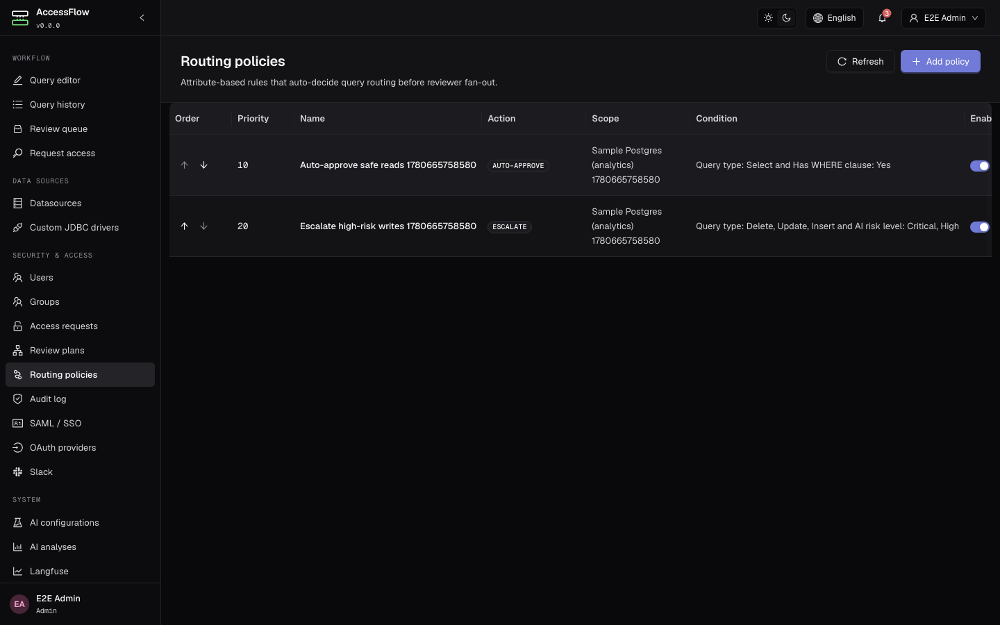
/admin/routing-policies — ordered, attribute-based auto-decision rules; first match by priority wins, unmatched falls through to the review plan.AI configurations
What it is. The AI brain behind query risk analysis and natural-language "text-to-query". Configure it per organization and point it at the provider that fits your data-egress policy; AccessFlow then scores every submitted query and, where enabled, drafts queries from plain-language prompts. It ships adapters for five providers — pick one:
- Anthropic — default model
claude-sonnet-4-20250514. - OpenAI — default model
gpt-4o. - Ollama — self-hosted, set Endpoint to the Ollama server URL.
- Custom (OpenAI-compatible) — any OpenAI API–compatible backend (vLLM, LM Studio, Together, Groq, OpenRouter, …). Set Endpoint to the server's base URL (required); the API key is optional for keyless self-hosted servers.
- Hugging Face — default model
meta-llama/Llama-3.3-70B-Instruct. Endpoint defaults to the hosted Inference Providers router (https://router.huggingface.co/v1, authenticated with a HF token) and can point at a local / self-hosted Text Generation Inference (TGI) server or a Dedicated Inference Endpoint. Keyless-capable, so local TGI runs without a token.

/admin/ai-configs/new — three-step wizard: Provider → Connection → Test.Configure it. Create a configuration with the three-step wizard at
/admin/ai-configs:
- Provider. Open
/admin/ai-configs, click New configuration, and pick a provider tile (OpenAI / Anthropic / Ollama / Custom OpenAI-compatible / Hugging Face). The wizard pre-fills the default model for the provider you chose. - Connection. Name the configuration, optionally override the model, and paste the API key (left empty for Ollama and custom keyless servers; for Ollama, Custom OpenAI-compatible, and Hugging Face providers supply an Endpoint URL instead — required for the custom provider, pre-filled with the router URL for Hugging Face and editable to a local TGI / Dedicated Endpoint). Tune Timeout, Max prompt tokens, and Max completion tokens if your provider has stricter limits.
- Test. The wizard sends a synthetic SQL snippet to the provider and shows the score, risk level, and any issues so you can confirm the credentials and model are working before you save.
Provider switches take effect immediately — no restart is required. Once saved, link the configuration to a datasource (Datasources → Configuration step) or to a review plan, and AccessFlow scores every matching submission against it.
Editable system prompt. Each configuration has an optional
System prompt field (on both the create wizard's Connection step and the
edit page). Leave it blank to use AccessFlow's built-in analyzer prompt, or paste your own
to add house rules, change tone, or steer the analysis. A custom prompt must contain the
{{sql}} placeholder (the query under review is substituted there); the
optional {{schema_context}}, {{db_type}}, and
{{language}} placeholders are substituted too. Click Load / reset to
default to pull the built-in template into the editor as a starting point — saving it
blank again reverts to the default. Prompt changes take effect immediately, just like
provider switches.
Multi-model orchestration & voting. On the configuration's edit page, enable Multi-model orchestration to run several models in parallel against the same query. The primary model above votes alongside the Additional models you add (each with its own provider, model, optional endpoint / API key, and weight). Pick a Voting strategy — Weighted average (default), Highest risk, or Majority vote — to combine their risk verdicts; issues and optimization suggestions from all models are merged. A common setup pairs a fast, cheap local model with a deeper cloud model. Per-model token cost and latency are recorded for every analysis and charted on the AI analyses dashboard.
Guardrails. Add one or more Guardrail patterns (case-insensitive regular expressions) to block queries whose text matches a pattern before any model is called — useful for prompt-injection strings or content you never want sent to a provider. A blocked editor preview returns an error inline; a blocked submitted query is recorded as a failed (critical) analysis. Each pattern is validated as a regex when you save.
Fallback pool. Give any configuration a Fallback priority (0–100, on the wizard's Connection step or the edit page) to mark it as an organization-wide fallback: when the configuration handling a request fails — provider unreachable, timeout, bad credentials — AccessFlow retries the request once against each fallback in ascending priority order (lower = tried first) before giving up with the original error. Fallback configurations show a Fallback #N tag in the list; clear the field to remove one from the pool. The typical setup marks a keyless local Ollama configuration as priority 0, so query analysis keeps working — air-gap friendly — when the cloud provider is down. Guardrail blocks and rate-limit / budget rejections never trigger the fallback pool.
Langfuse integration
AccessFlow optionally connects to
Langfuse for
LLM observability and prompt management, configured per organization at
/admin/langfuse (enable the integration, set the host — defaults to
https://cloud.langfuse.com — plus the public/secret key, which is stored
encrypted and never shown again). Two independent toggles: Send analysis traces
emits a trace of every AI analysis (input SQL, structured output, model, token usage,
latency) to Langfuse; Use Langfuse-managed prompts lets each AI configuration
point at a Langfuse prompt by name + label (the Langfuse prompt name /
Langfuse prompt label fields on the AI config pages) so you can iterate on prompts
in Langfuse without redeploying. Both are best-effort and non-blocking — a Langfuse outage
never affects query workflow. Use the Test connection button to verify your
credentials.
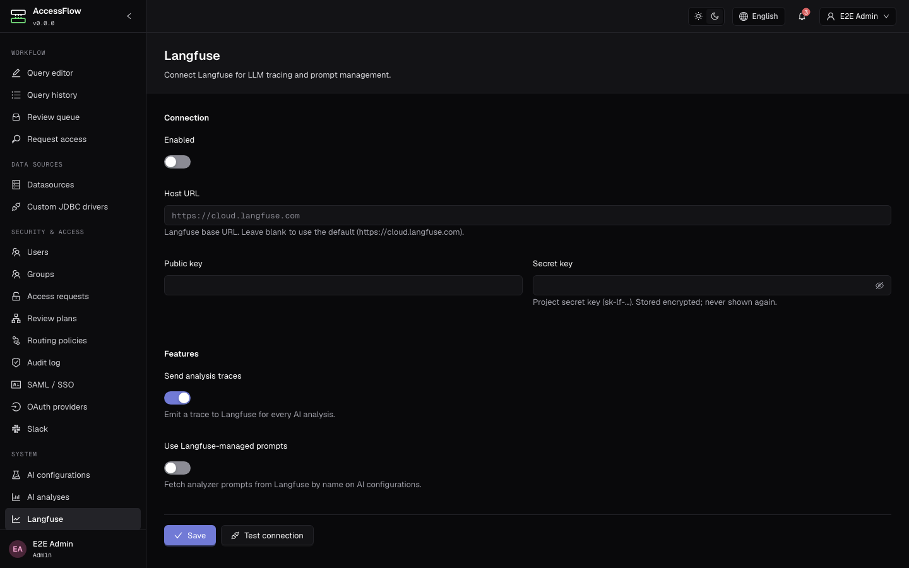
/admin/langfuse — per-org tracing + managed prompts; keys are stored encrypted, Test connection verifies them.RAG knowledge base. Each AI configuration can carry a retrieval-augmented-generation knowledge base. Toggle Enable RAG on the create wizard's Connection step or the edit page, pick a Vector store — In-app (pgvector), which stores vectors in AccessFlow's own PostgreSQL, or Qdrant (supply the endpoint, collection, and optional API key) — and configure a dedicated Embedding provider + model (OpenAI, Ollama, OpenAI-compatible, or Hugging Face; Anthropic has no embeddings API). Then add Knowledge documents (data-governance policies, naming conventions, schema notes) on the edit page; each is chunked, embedded, and stored. At analysis and text-to-query time the most relevant chunks are retrieved (tune Top-K and Similarity threshold) and injected into the prompt, so the AI follows your house rules. Use Test RAG connection to verify the embedding model and vector store are reachable. Retrieval is best-effort — a store outage never blocks analysis.
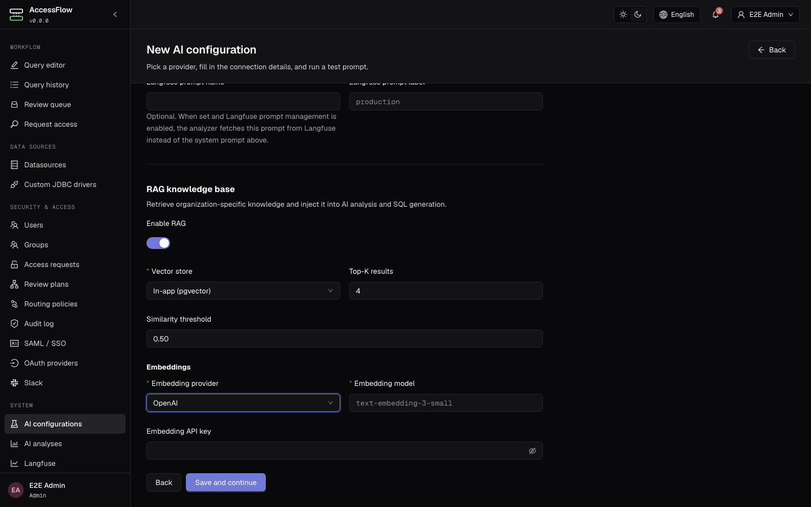
/admin/ai-configs/new → Enable RAG. Pick a vector store + embedding model; add knowledge documents on the edit page.vector extension. The bundled Docker Compose / Helm deployments provision it
automatically (a superuser init step); for external / managed PostgreSQL, install the
vector extension on the AccessFlow database before starting the backend, and
set ACCESSFLOW_RAG_PGVECTOR_DIMENSIONS (default 1536) to match your embedding
model's output dimension before the first migration. If the extension is missing,
AccessFlow still starts — the in-app store is disabled (a banner appears on the RAG
settings) and external Qdrant remains available. Set
ACCESSFLOW_RAG_PGVECTOR_ENABLED=false to opt out explicitly, or
ACCESSFLOW_RAG_PGVECTOR_AUTO_PROVISION=false to disable the best-effort
CREATE EXTENSION attempt at startup.
LOW / MEDIUM / HIGH / CRITICAL),
and a list of issues categorised as anti-patterns, missing indexes, restricted-column
access, etc. The score is informational — only human reviewers can finalize approval
unless the plan opts in to auto-approve reads.
Tune it. Langfuse observability:
ACCESSFLOW_LANGFUSE_DEFAULT_HOST (https://cloud.langfuse.com),
ACCESSFLOW_LANGFUSE_PROMPT_CACHE_TTL (PT60S),
ACCESSFLOW_LANGFUSE_CONNECT_TIMEOUT (PT5S),
ACCESSFLOW_LANGFUSE_REQUEST_TIMEOUT (PT10S). RAG:
ACCESSFLOW_RAG_PGVECTOR_ENABLED (true),
ACCESSFLOW_RAG_PGVECTOR_AUTO_PROVISION (true),
ACCESSFLOW_RAG_PGVECTOR_DIMENSIONS (1536),
ACCESSFLOW_RAG_CHUNK_SIZE (800),
ACCESSFLOW_RAG_MAX_DOCUMENT_CHARS (100000). Per-org guardrails:
ACCESSFLOW_AI_RATE_LIMIT_REQUESTS_PER_MINUTE (30; <= 0
disables) and ACCESSFLOW_AI_RATE_LIMIT_TOKENS_PER_MONTH (0 =
unlimited).
AI analyses dashboard
What it is. An org-wide trend view of every AI analysis. Use it to spot
risk-pattern drift, see which queries the AI consistently flags, compare each model's cost
and latency, and decide whether a stricter review plan or schema-level guardrails are
warranted. /admin/ai-analyses charts the average risk score over a
configurable window, the most frequent issue categories, the most active submitters, and —
per model — token cost and average latency.
Configure it. Nothing to set up — the dashboard fills in automatically once a datasource has AI analysis enabled.
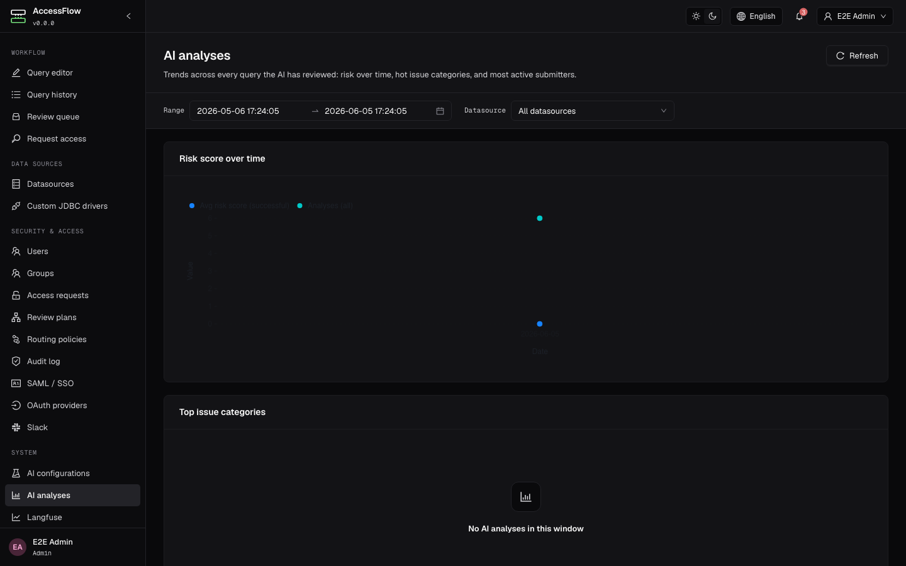
/admin/ai-analyses — risk trends, hottest issue categories, and top submitters across every analyzed query.Datasource health
What it is. An operational dashboard for spotting a datasource in trouble — pool exhaustion, a database that has turned slow, or a sudden volume spike. Use it as the first place to look when queries start failing or hanging.
Configure it. Nothing to set up. /admin/datasource-health
(admin-only, read-only) auto-refreshes every 30 seconds; each card shows live
connection-pool utilisation (active / idle / free against the configured maximum) plus a
trailing 24-hour summary of query volume, p50 / p95 execution latency, and error count.
Pool gauges read "pool not initialised" until the datasource's first query runs (pools are
created on demand).
Tune it. ACCESSFLOW_PROXY_HEALTH_CACHE_TTL caches each
snapshot so the auto-refresh stays cheap (default PT30S).
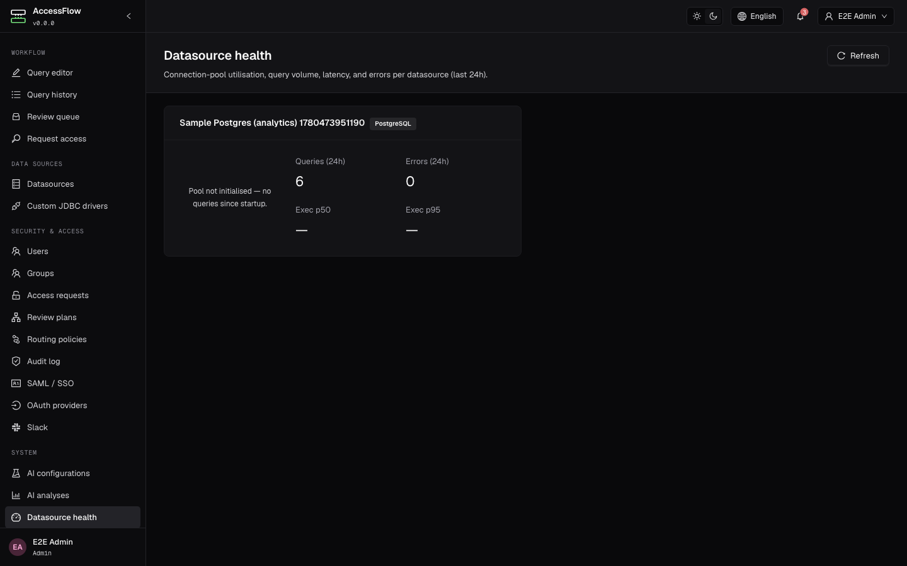
/admin/datasource-health — one card per datasource, auto-refreshing every 30 s.Notification channels
What it is. Where AccessFlow sends review notifications — when a query is
submitted, approved, rejected, times out, or scores CRITICAL on AI risk. Wire
up the channels your team already lives in so reviewers act fast. Configure as many as you
like per organization (e.g. one Slack channel per team).
Configure it. Manage channels at /admin/notifications:

/admin/notifications → Add channel. The form swaps its lower half between Email, Slack, Webhook, Discord, Telegram, Microsoft Teams, PagerDuty, ServiceNow, and Jira fields when you change Type.- Open
/admin/notificationsand click Add channel. - Pick a type:
- Email — supply SMTP host, port, optional user / password, TLS, and the From address / display name. Leave the SMTP fields blank to fall back on the system SMTP.
- Slack — paste an incoming-webhook URL for one-way Block Kit messages (header, SQL preview, and a View in AccessFlow link). For interactive Approve / Reject buttons, configure a Slack app instead (see below).
- Webhook — supply a target URL and a signing secret. Every POST carries
X-AccessFlow-Signature: sha256=...computed from the body and the secret. - Discord — paste a channel webhook URL (Server Settings → Integrations → Webhooks). Optional username and avatar URL override the bot identity per-message. Messages render as a rich embed with the SQL preview in a fenced code block.
- Telegram — create a bot via @BotFather, add it to the target group/channel, and configure the bot token plus numeric chat ID. Messages use MarkdownV2 formatting.
- Microsoft Teams — paste the channel's Incoming Webhook (or Power Automate webhook) URL. Messages render as an Adaptive Card with a View in AccessFlow action button.
- PagerDuty — paste an Events API v2 integration routing key, pick a default severity (critical / error / warning / info), and choose which triggers page the channel: AI critical-risk query, review timeout, and/or routing-policy escalation. Other events never fire it. AccessFlow sends a
triggerevent with a query-stable dedup key so repeat events fold into one incident. - ServiceNow — supply the instance URL plus a username / password allowed to create incidents via the Table API, optionally an assignment group and urgency (1–3), and choose which triggers open an incident: query rejected, review timeout, and/or routing-policy escalation. Created incidents link back onto the query detail page.
- Jira — supply the site URL, an account email + API token, the target project key, and optionally an issue type (default Task); pick the same trigger set. Issues are created via REST v2 with an
accessflowlabel and link back onto the query detail page.
- Bi-directional status sync (ServiceNow / Jira). Toggle Bi-directional status sync on the channel and set a webhook secret; then point a ServiceNow Business Rule / Jira Automation rule at
POST /api/v1/integrations/servicenow/webhook/{channelId}(or…/jira/webhook/{channelId}) sending{"external_id", "status", "resolution", "actor"}signed withX-AccessFlow-Timestamp+X-AccessFlow-Signature: sha256=HMAC-SHA256(secret, "v1:{timestamp}:{body}"). Ticket status updates flow onto the query detail page, and a resolution matching the channel's approve / reject status lists decides a query still awaiting review — attributed to the ticketing system in the audit log. - Send a test event. After saving, each channel card has a Test button — the dispatcher fires a synthetic event and reports delivery success.
- Edit or remove. Each card also has Edit and Delete buttons. Deleting a channel is immediate (hard delete) — there is no soft-delete, but webhook retries already scheduled before the delete still complete.
Sensitive config fields (SMTP password, webhook secret, Telegram bot token, PagerDuty routing key, ServiceNow password, Jira API token, ticketing webhook secret) are AES-256-GCM encrypted at rest and are never shown in plaintext after the channel is saved.
+30s, +2 min, +10 min. Tune the
delays via ACCESSFLOW_NOTIFICATIONS_RETRY_FIRST /
_SECOND / _THIRD. Failed deliveries log ERROR
but never affect query workflow state.
Tune it. ACCESSFLOW_PUBLIC_BASE_URL sets the link embedded in
messages (default http://localhost:5173); retry delays are
ACCESSFLOW_NOTIFICATIONS_RETRY_FIRST / _SECOND / _THIRD
(PT30S / PT2M / PT10M). For air-gapped installs that
route through an internal proxy, override
ACCESSFLOW_NOTIFICATIONS_TELEGRAM_API_BASE_URL
(https://api.telegram.org/) and
ACCESSFLOW_NOTIFICATIONS_PAGERDUTY_API_BASE_URL
(https://events.pagerduty.com/). The inbound ticketing-webhook signature
window is ACCESSFLOW_NOTIFICATIONS_TICKETING_SIGNATURE_TOLERANCE
(PT5M).
Slack app — Approve / Reject from Slack
Beyond the one-way Slack webhook channel, an admin can connect a Slack app
at /admin/slack so reviewers act on requests without leaving Slack. Create the app
in Slack's console, then paste its App ID, Bot token, Signing secret,
and a default channel ID. When an app is active, review-request messages are posted via
the bot token and carry Approve and Reject buttons.
- Each reviewer links their Slack identity once. On
/profile→ Slack account, click Generate link code, then run/accessflow link <code>in Slack. The code is single-use and short-lived (ACCESSFLOW_NOTIFICATIONS_SLACK_LINK_CODE_TTL, default 10 min). - Clicking Approve / Reject runs through the same review service as the UI — a reviewer can never approve their own query, and role / stage checks apply identically. The original Slack message updates in place with the decision.
Inbound clicks are verified by the Slack signing secret (HMAC over the raw body, with a
timestamp/replay window set by ACCESSFLOW_NOTIFICATIONS_SLACK_SIGNATURE_TOLERANCE,
default 5 min). The bot token and signing secret are AES-256-GCM encrypted at rest and never
returned by the API. Point your Slack app's Interactivity request URL at
/api/v1/integrations/slack/actions and its slash command at
/api/v1/integrations/slack/commands.
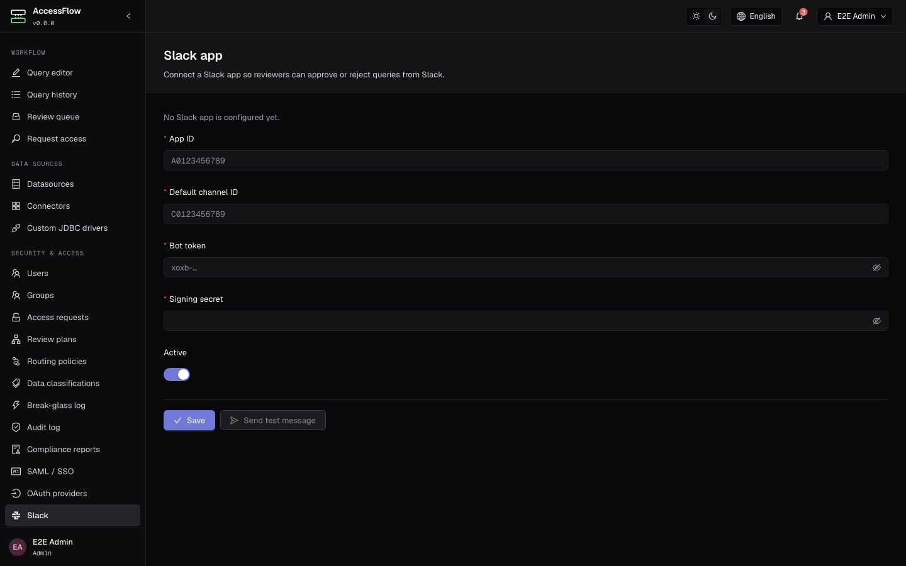
/admin/slack — connect the interactive Slack app (bot token + signing secret).System SMTP
What it is. The fallback mail server for transactional email — password resets, user invitations, and any email notification channel that doesn't carry its own SMTP settings. Set it once per org so those emails can go out.
Configure it. On /admin/notifications, the first card is
System SMTP:

/admin/notifications → System SMTP card → Configure.- Open
/admin/notifications. The first card is System SMTP — click Configure (or Edit if it's already set). - Fill the form. Host, port (587 for STARTTLS, 465 for implicit TLS), optional username and password, STARTTLS toggle, and the From address — required and validated as an email. The password field shows "Leave blank to keep the existing password" when editing, so secrets aren't echoed back.
- Send a test email. After saving, the card exposes a sink-address input + Send test button so you can verify deliverability without firing a real workflow event.
The password is AES-256-GCM encrypted at rest. Delete the row from the same card if you'd rather rely solely on per-channel email overrides.
OAuth 2.0 / OIDC
What it is. Single sign-on through an external identity provider, so
people log in with accounts they already have instead of an AccessFlow password. Google,
GitHub, Microsoft, and GitLab are built in; two more tabs cover self-hosted GitHub
Enterprise and GitLab (self-managed) (you provide the instance base URL, e.g.
https://github.acme.corp, and AccessFlow appends the well-known sub-paths); and
a generic OpenID Connect tab integrates any other OIDC provider (Keycloak, Auth0,
Okta, Authentik, Zitadel). It all lives in the database, so adding a provider needs no
restart.
Configure it. Manage providers at /admin/oauth2:

/admin/oauth2 — one tab per built-in provider (Google / GitHub / Microsoft / GitLab), two self-hosted tabs (GitHub Enterprise / GitLab self-managed), plus a generic OpenID Connect tab. Each tab carries its own redirect URI and provider-specific guidance.- Register an OAuth app at the provider using the redirect URI shown in the AccessFlow tab (copy it directly from the info callout). The format is
{ACCESSFLOW_PUBLIC_BASE_URL}/api/v1/auth/oauth2/callback/{provider}. - Open
/admin/oauth2, pick the provider tab, and paste the Client ID and Client secret. Microsoft additionally needs a Tenant ID; other providers expose optional Scopes override for custom claims. For GitHub Enterprise and GitLab (self-managed), also enter the Server base URL of your self-hosted instance (origin only — no path, no query;https://only). AccessFlow appends/login/oauth/authorize,/login/oauth/access_token, and/api/v3/*for GitHub Enterprise, and/oauth/authorize,/oauth/token,/oauth/userinfo,/oauth/discovery/keysfor self-managed GitLab. For the OpenID Connect tab, also enter the IdP's Display name (rendered on the login button as "Continue with …"), Authorization endpoint URL, Token endpoint URL, UserInfo endpoint URL, JWK set URL, and Issuer URL — most IdPs publish all five at/.well-known/openid-configuration. Optional attribute-claim fields (User-name claim, Email claim, Email-verified claim, Display-name claim) default to the standard OIDC names (sub,email,email_verified,name) and only need to be set if your IdP uses non-standard claims. - (Optional) Restrict who may sign in. Use Allowed organizations and Allowed email domains on the same tab:
- Google — populate Allowed email domains with your Workspace domain(s); the organization list is ignored.
- GitHub — list the org logins users must belong to (e.g.
bablsoft) in Allowed organizations. AccessFlow callsGET /user/orgs, so the Scopes override must includeread:org— saving an active config without it returns a 422 with a clear message. - Microsoft — list AAD group object IDs in Allowed organizations. The Entra app registration must be configured (Token configuration → groups) to emit the
groupsclaim. - GitLab — list full group paths from the OIDC
groupsclaim (e.g.acme/team). - GitHub Enterprise — same as GitHub but the orgs call hits
{base_url}/api/v3/user/orgs;read:orgscope is still required. - GitLab (self-managed) — same as GitLab (OIDC
groupsclaim) but resolved against your self-hosted instance. - OpenID Connect — set the Groups claim field to the claim name your IdP uses (often
groupsorroles), then list the group identifiers users must belong to in Allowed organizations. Leave the claim field blank to disable group enforcement and rely on Allowed email domains instead.
OAUTH2_ORG_NOT_ALLOWEDorOAUTH2_EMAIL_DOMAIN_NOT_ALLOWED. - Pick a default role for first-time sign-ins (defaults to
READONLY) and flip Active on to enable the provider's button on the login page. - Set
ACCESSFLOW_OAUTH2_FRONTEND_CALLBACK_URLif the frontend lives at a different origin than the backend's CORS origin (default{CORS_ALLOWED_ORIGIN}/auth/oauth/callback).
Email verification is required before an OAuth account is linked, and account-linking is conservative — a provider-supplied email will not silently take over an existing local user. Implementation details: docs/07-security.md → Authentication.
Tune it. ACCESSFLOW_OAUTH2_FRONTEND_CALLBACK_URL (where the
provider round-trip lands, default ${CORS_ALLOWED_ORIGIN}/auth/oauth/callback)
and ACCESSFLOW_OAUTH2_EXCHANGE_CODE_TTL (one-time exchange-code lifetime,
default PT1M).
SAML 2.0 SSO
What it is. Single sign-on via a SAML 2.0 identity provider (Okta, Azure AD, OneLogin, …) — the enterprise-SSO alternative to OAuth / OIDC. Configure one record per organization; both SP-initiated and IdP-initiated logins work.
Configure it. Fill the single form at /admin/saml:

/admin/saml — a single config form covering IdP metadata, SP entity, and attribute mapping.- Open
/admin/saml. - Identity provider. Paste the IdP metadata URL (preferred — AccessFlow refreshes it periodically), or fall back to IdP entity ID + Signing certificate (PEM) when the IdP doesn't publish metadata over HTTP.
- Service provider. Set SP entity ID, ACS URL, and SLO URL — register these with your IdP.
- Attributes. Map the IdP assertion attributes that carry email, display name, and role. Pick a default role for users whose assertion doesn't include one, then flip Active on to enable the SAML button on the login page.
SAML users rely on the IdP's MFA rather than AccessFlow's TOTP. Full SP metadata, signing-cert rotation, and assertion validation rules live in docs/07-security.md.
Tune it. ACCESSFLOW_SAML_FRONTEND_CALLBACK_URL
(default ${CORS_ALLOWED_ORIGIN}/auth/saml/callback) and
ACCESSFLOW_SAML_EXCHANGE_CODE_TTL (default PT1M). To pin the
service-provider signing keypair instead of the auto-generated one, set
ACCESSFLOW_SAML_SP_SIGNING_KEY_PEM and
ACCESSFLOW_SAML_SP_SIGNING_CERT_PEM.
Audit log
What it is. A complete, tamper-evident record of everything that happens — logins, query submissions and decisions, datasource changes, channel edits. It's your answer to "who did what, when" for security reviews and compliance. Records are append-only and cryptographically chained, so a deleted or altered entry is detectable after the fact (query result data is never stored).
Configure it. Nothing to switch on — it captures automatically. Review it
at /admin/audit-log:
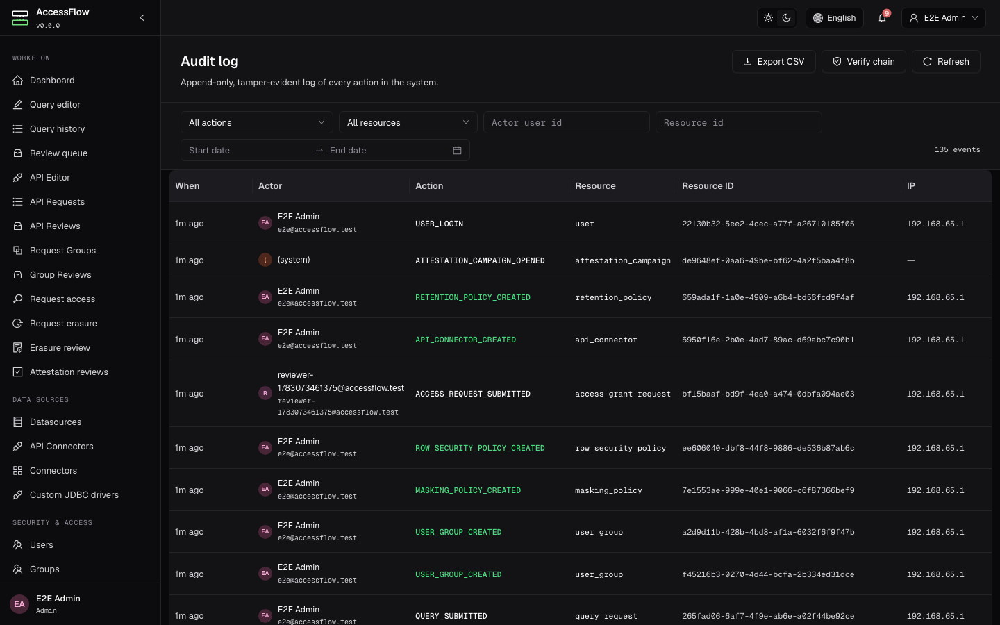
/admin/audit-log — filter, paginate, verify the HMAC chain, and export to CSV.- Filter and search. Narrow by action, resource type, actor user id, or resource id; an optional start/end date pair scopes the window.
- Verify chain. The Verify chain button re-walks every row's HMAC link in order and surfaces the first mismatch — useful as a recurring auditor check.
- Export CSV. Streams the current filter as RFC 4180 CSV with the same columns shown in the UI. Long-running exports respect the same query budget as the table view (use date filters to keep them bounded).
Tune it. The chain-signing key defaults to a per-deployment value derived
from ENCRYPTION_KEY; set AUDIT_HMAC_KEY (hex, ≥ 32 bytes)
explicitly when you want to manage or rotate it yourself. Inserts run through a dedicated
AUDIT_DB_USER / AUDIT_DB_PASSWORD role that has no UPDATE / DELETE
rights on the log.
Compliance reports & signed exports
What it is. Ready-made compliance reporting with audit-grade exports. Two pre-built reports answer common auditor questions over a chosen period: classified-data access (which executed queries touched PII / PCI / PHI / GDPR / FINANCIAL / SENSITIVE data, joined to your data-classification tags) and a regulatory audit trail of DDL / DELETE operations with the approvers' names. Use it to hand a regulator or internal auditor evidence they can verify themselves.
Configure it. Build and export reports from the compliance dashboard at
/admin/auditor — open to the read-only AUDITOR role and to
admins. Each report exports as a digitally signed PDF or CSV that an
auditor can verify offline against the public key at
/api/v1/admin/compliance/signing-certificate; every export is itself recorded
in the audit log with its content hash, so it's tamper-evident
end to end.
Tune it. ACCESSFLOW_COMPLIANCE_MAX_REPORT_PERIOD (largest
window, default P366D) and ACCESSFLOW_COMPLIANCE_MAX_ROWS (row
cap before a report is marked truncated, default 50000). Signing reuses
JWT_PRIVATE_KEY — no extra secret required.
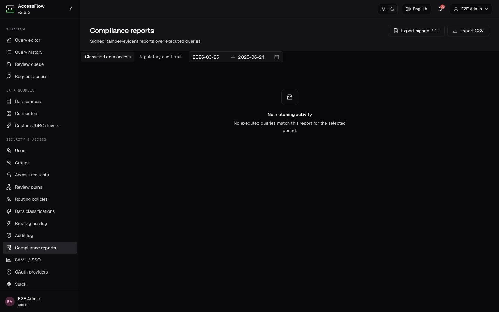
/admin/auditor — the read-only Auditor role builds and signs compliance reports over the immutable query snapshots.Access recertification campaigns
What it is. Recurring attestation campaigns that make someone periodically
re-confirm who still needs standing datasource access — the review control SOC 2 and
ISO 27001 auditors ask for. An admin schedules an org- or datasource-scoped campaign;
when it opens it snapshots the current standing grants into one item per
grant and notifies the eligible reviewers (multi-channel, plus an
attestation.campaign_opened WebSocket event). Reviewers work a
certify / revoke worklist that reuses the review-queue patterns
(self-review blocked, bulk-certify); a revoke routes through the normal
permission-revoke path, so access is actually removed.
Configure it. Manage campaigns from /admin/attestation and
certify items from the reviewer worklist at /reviews/attestations. Two
clustered-safe jobs run the lifecycle: one opens SCHEDULED campaigns at their
scheduled_open_at, the other closes OPEN campaigns at their
due_at and applies each campaign's pending-default (KEEP or
REVOKE) to anything a reviewer never got to. A completed campaign exports as a
CSV evidence file (who reviewed what, decisions, timestamps), and every
transition — ATTESTATION_CAMPAIGN_OPENED/CLOSED,
ATTESTATION_ITEM_CERTIFIED/REVOKED — lands in the tamper-evident
audit log.
Tune it. ACCESSFLOW_ATTESTATION_OPEN_POLL_INTERVAL and
ACCESSFLOW_ATTESTATION_CLOSE_POLL_INTERVAL (open / close scan cadence, both
default PT5M) and ACCESSFLOW_ATTESTATION_MAX_EVIDENCE_ROWS (row
cap before an evidence CSV is marked truncated, default 50000).
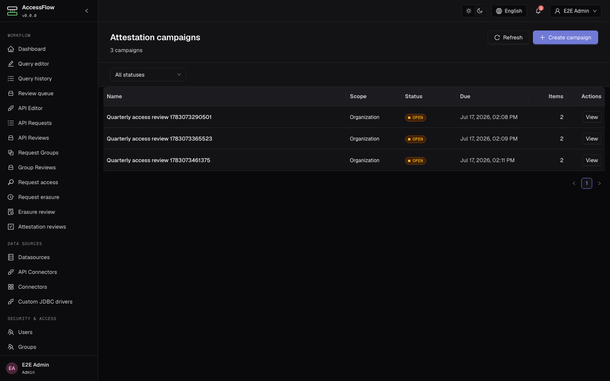
/admin/attestation — admins schedule recurring access-recertification campaigns; reviewers certify or revoke each snapshotted grant.Behavioural anomaly detection (UBA)
What it is. Spots when a user's database activity drifts from their own normal pattern — a spike in query volume, access at odd hours, reaching for tables they've never touched, unusual query types or row counts, or a jump in errors — and flags it for an admin. Use it to catch compromised accounts, insider misuse, or credential sharing that static rules would miss. It learns each user's baseline from audit-log metadata only — never query result data.
Configure it. Nothing to switch on — it runs automatically once a user has
built up enough history (until then they're left alone). Flagged anomalies appear on
/admin/anomalies and fire a notification across every active channel (including
PagerDuty), and a flagged user's next query is escalated to stricter review.
ADMIN and the read-only AUDITOR role can review anomalies; only
ADMIN can acknowledge (triaged) or dismiss (false positive)
one. Each anomaly can also carry an optional AI natural-language explanation.
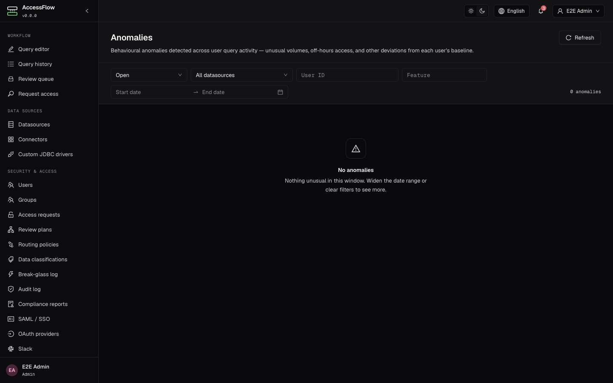
/admin/anomalies — UBA flags out-of-pattern activity from audit-log baselines; admins acknowledge or dismiss each one.
Tune it. Sensitivity and cadence via the
ACCESSFLOW_AI_ANOMALY_* environment variables:
ACCESSFLOW_AI_ANOMALY_DETECTION_POLL_INTERVAL (how often it runs, default
PT15M), …_LOOKBACK_WINDOW (aggregation window, PT1H),
…_Z_SCORE_THRESHOLD (how far from normal counts as anomalous, 3.0),
…_IQR_MULTIPLIER (1.5),
…_MIN_SAMPLE_SIZE (history required before a user is scored, 7),
…_MAX_BASELINE_SAMPLES (90),
…_OFF_HOURS_THRESHOLD (0.02), and
…_SUMMARY_ENABLED (AI explanations on/off, true).
AI rate limit & cost budget. Two per-organization guardrails protect the
provider API key from a runaway editor or compromised account, enforced before every AI
analysis call (editor preview, text-to-SQL, and the async analysis on query submit).
ACCESSFLOW_AI_RATE_LIMIT_REQUESTS_PER_MINUTE (default 30; <= 0
disables) caps requests per minute via a Redis counter, and
ACCESSFLOW_AI_RATE_LIMIT_TOKENS_PER_MONTH (default 0 = unlimited /
opt-in) caps the summed prompt + completion tokens of the org's analyses in the current
calendar month. When a limit is hit, the synchronous editor paths return
HTTP 429 and the async path records a CRITICAL "AI budget exhausted" /
"AI rate limit exceeded" analysis row so human review still proceeds.
Personalized dashboard & weekly digest
The default post-login home (/dashboard) is self-scoped — every user sees
only their own data, no admin role required: pending approvals as a reviewer, their recent
queries with status/risk trend sparklines, an AI optimization-suggestion backlog they can
dismiss or open in the editor, and their own behavioural-anomaly alerts. Widgets are
customizable (show/hide, collapse, drag-and-drop reorder) and persist per browser. Users can
export the week's summary as a digitally signed PDF/CSV on demand, and opt
in to a weekly email digest delivered to their email and any configured chat
channels. The digest job is clustered-safe; tune it with
ACCESSFLOW_DASHBOARD_WEEKLY_DIGEST_POLL_INTERVAL (how often the job wakes,
default P1D) and ACCESSFLOW_DASHBOARD_WEEKLY_DIGEST_PERIOD (minimum
gap between digests per user, default P7D).
Data lifecycle & right-to-erasure
Admin. Define retention/erasure rules at
/admin/lifecycle/policies — per datasource, target a table / column set /
classification tag with a retention window (ISO-8601, e.g. P30D or
P7Y) plus arbitrary conditions (a structured, parameter-bound
predicate builder and a JSqlParser-validated raw-WHERE escape hatch — SQL
datasources only) and an action: hard-delete, soft-delete,
or pseudonymize (salted SHA-256 / format-preserving / tokenization), with an
optional cron schedule. A dry-run preview reports impact
without executing. The scan job stages eligible work (honouring the cron); tune it with
ACCESSFLOW_LIFECYCLE_POLICY_SCAN_INTERVAL (default PT1H). Staged
runs now execute automatically through the proxy —
ACCESSFLOW_LIFECYCLE_POLICY_EXECUTION_INTERVAL (default PT5M).
Any user can file a right-to-erasure request at
/lifecycle/erasure using the same rich configuration (subject
identifier and/or target table + conditions). It flows through AI-assisted scope detection
and review-plan-based peer review: any eligible REVIEWER or
admin reviews it at /lifecycle/erasure-reviews (per the datasource review plan,
multi-stage; the submitter can never approve their own), and stale reviews auto-reject via
ACCESSFLOW_LIFECYCLE_REVIEW_TIMEOUT (default PT168H). Approved
requests are executed through the proxy — soft-deleted rows vanish from reads,
DELETEs become marker updates, aged PII resolves to an irreversible salted hash
at read time — with tamper-evident proof-of-deletion audit records and a
retention-adherence compliance export. Tune the executor with
ACCESSFLOW_LIFECYCLE_ERASURE_EXECUTION_INTERVAL (default PT1M).
End-user workflows
The pages above configure the system. This section is the operator's view of how analysts and reviewers actually use it day-to-day — the editor, scheduled queries, and the bulk-approval review queue that landed in v1.1.
Submitting a query
/editor hosts the SQL editor: dialect-aware syntax highlighting, schema
autocomplete fed by /datasources/<id>/schema, a debounced AI
analyze pass, and an in-pane review-plan summary. The submitter picks a datasource,
writes SQL, fills in a justification, and submits — at which point the workflow
takes over.
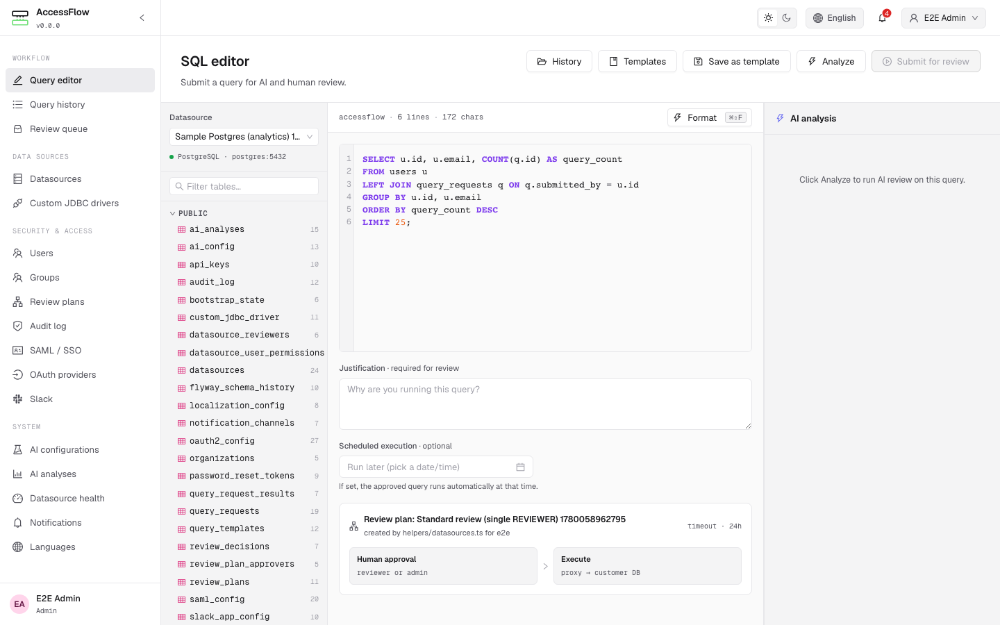
/editor — schema browser, SQL pane, justification, scheduled-execution row, and AI analysis side panel.Drafting queries from natural language
When a datasource has text-to-query enabled and an AI configuration bound (see Datasources → Configuration), the editor shows a Describe your query bar above the query pane. Type a plain-language request (e.g. "order numbers for the last 5 days"), click Generate query, and the draft is written into the editor for you to review and edit — in the datasource engine's native query language (SQL for relational engines, plus MongoDB shell/JSON, Cypher, CQL, the Elasticsearch Query DSL, redis-cli, SQL++, and PartiQL for the NoSQL engines; the editor mounts the matching syntax automatically). The generated query is never executed directly — it still flows through the full AI analysis and review pipeline like any hand-written submission.
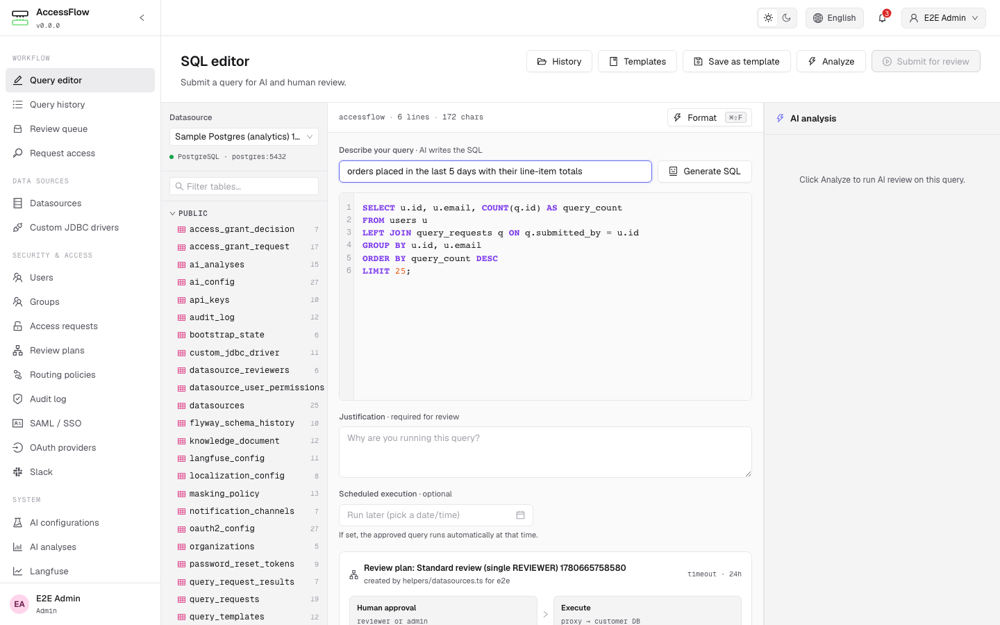
/editor → Describe your query. AI drafts the query; the draft still goes through the normal review pipeline.Query templates library
The editor's toolbar has a Templates drawer button and a
Save as template shortcut. Saved templates are scoped to your
organisation and have two visibilities: Private (only you can see and load
them) or Team (every user in the org can read; only the owner can edit
or delete). Templates can optionally be pinned to a datasource so they surface
with a "pinned to current datasource" badge when that datasource is selected.
Template bodies can include :placeholder tokens — when you load a
template, AccessFlow prompts you for each placeholder value and substitutes
them client-side. Submission still flows through the standard AI analysis and
review pipeline; templates are a pure save / load surface, never a bypass.
Every save records an immutable version. Open a template's History tab to see how it evolved — pick any two revisions for a side-by-side Git-style diff, and restore a prior version when an edit went wrong. Restoring creates a new version rather than discarding history, so the full trail is always preserved.
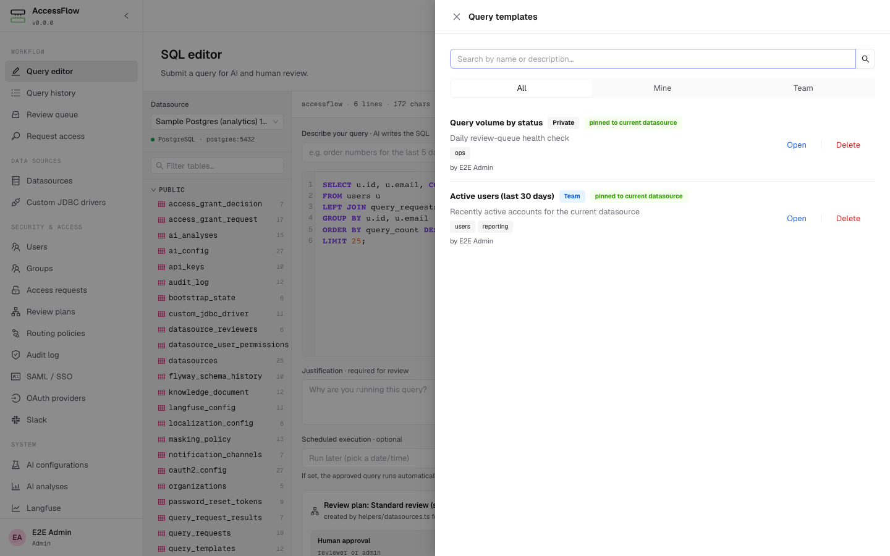
/editor → Templates — load a saved query (Private or Team), with :placeholder prompts on open.Tracking submitted queries
/queries (labelled Query history in the sidebar) lists every
query the current user has submitted or has read access to. Filter by status, risk,
datasource, or date range, and export the visible rows as CSV. Click a row to open
/queries/<id> for the full timeline, AI analysis, decisions, and
(when executed) the result preview.
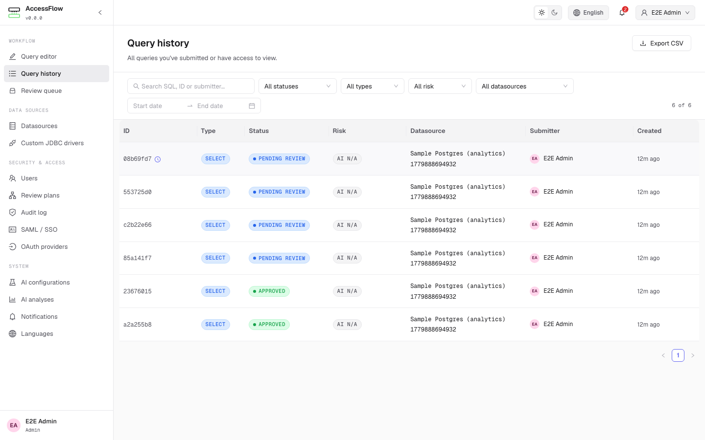
/queries — submitter view of every query, with Export CSV.Scheduling a query
Submitters can pick a Scheduled execution datetime instead of running
immediately. The query still goes through review; once approved, it stays in
APPROVED until scheduled_for arrives, at which point
ScheduledQueryRunJob (cadence
ACCESSFLOW_WORKFLOW_SCHEDULED_RUN_POLL_INTERVAL, default
PT1M) triggers execution. The submitter can cancel an
APPROVED scheduled run any time before it fires.
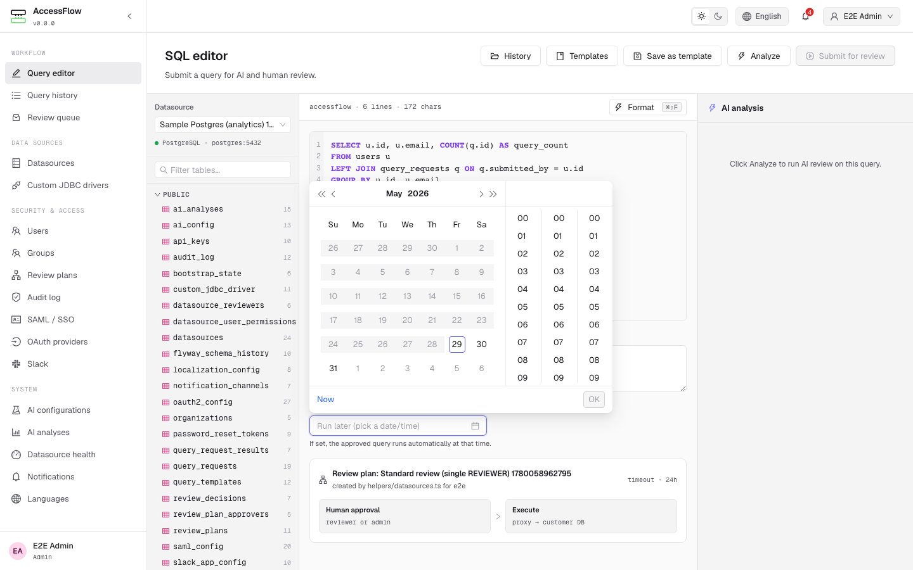
/editor → Scheduled execution row → date picker. Leave blank for immediate execution.Request chaining & grouping
A single real task often spans several steps across systems — a schema change on
PostgreSQL, a follow-up update on MongoDB, then a REST call downstream. The
group builder at /request-groups/new bundles those steps
into one grouped request that is reviewed and approved as a single
element, then executed as an ordered sequence. Add steps — each a
query against a datasource or an API call against a
governed connector — drag-reorder them, and watch a per-step AI risk preview plus an
aggregate risk badge. You can only add a member targeting a datasource / connector you're
permitted to use; a break-glass group requires can_break_glass on
every member target.
The group is reviewed as one element: the required approvers are the union
across all member plans, and the group reaches APPROVED only when
every member plan's per-stage approval requirement is satisfied — no
member's policy is weakened by bundling, and you can never approve your own group.
Reviewers see it as one expandable element in their queue. On execute, members run in
sequence_order; on the first failure (with continue-on-error off) the
run stops, the remaining members are SKIPPED, and the group becomes
PARTIALLY_EXECUTED (or FAILED if the first member fails). With
continue-on-error on, all members run and the group is EXECUTED with
mixed per-member outcomes.
There is no distributed rollback. An approved group is not
atomic — already-applied members stay (you cannot roll back a committed Postgres DDL
because a later Mongo write failed). The detail page at /request-groups/:id
shows ordered step-by-step progress (running / done / failed / skipped) live over the
WebSocket, and each member records its own snapshot + audit row alongside the group-level
audit.
Operator env vars. A scheduled group runs at its
scheduled_for time via ScheduledGroupRunJob (cadence
ACCESSFLOW_REQUESTGROUPS_RUN_POLL_INTERVAL, default PT1M); a
group left awaiting review past the review timeout is auto-rejected to
TIMED_OUT by GroupTimeoutJob (cadence
ACCESSFLOW_REQUESTGROUPS_TIMEOUT_POLL_INTERVAL, default PT5M).
Both are clustered-safe (ShedLock).
Reviewing & bulk approval
Reviewers land on /reviews for the queue assigned to them. Each row
shows the query id, classification, AI risk, datasource, submitter, and elapsed
time. Three tabs scope the view: Assigned to you, All pending
(visible to anyone the plan grants approver eligibility), and Recently decided.
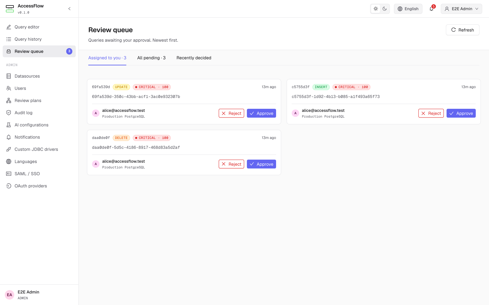
/reviews — reviewer queue, no rows selected.Selecting one or more rows surfaces a bulk-action bar with Approve selected, Reject selected, and Request changes — the same decisions available per row, but applied to every selected query in one round-trip. Reject and Request changes still require a comment for every query in the batch (the server enforces this; the UI prompts for each one inline before submitting).
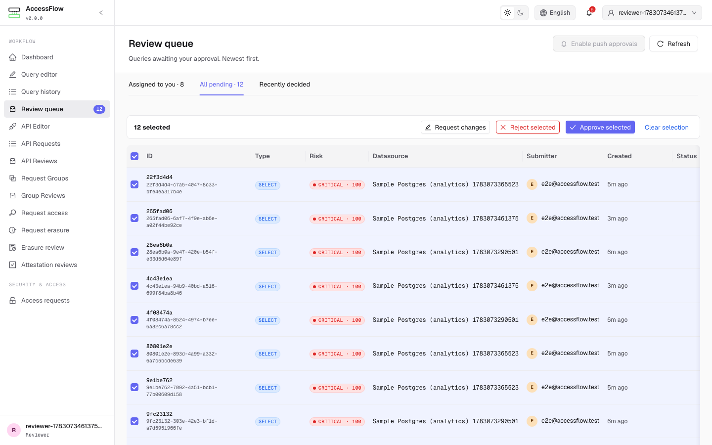
/reviews — bulk-action bar appears the moment a row is checked.Reviewers can never approve their own queries; the backend enforces this regardless of plan configuration, and self-submissions are filtered out of the queue before the page renders.
Mobile approvals & one-tap push
What it is. Approve or reject from your phone. Reviewers get a push notification the moment a query needs them and can act on it in one tap — without keeping a browser tab open. Install AccessFlow to your home screen and the review queue even works offline.
Configure it. A reviewer taps Enable push approvals on
/reviews and grants the browser notification permission. From then on each
review request arrives as a push notification with Approve and Reject
actions; tapping one opens a focused page showing the query and asks for a quick
re-verification — your password, or a TOTP code when 2FA is enrolled — before the decision
commits. A single tap never approves a query, and the "can't approve your own query" guard
is enforced server-side on every channel.
Tune it. Push works out of the box — a signing keypair is generated and
stored on first use (encrypted with ENCRYPTION_KEY). To pin your own, set
ACCESSFLOW_PUSH_VAPID_PUBLIC_KEY /
ACCESSFLOW_PUSH_VAPID_PRIVATE_KEY (raw base64url, e.g. from
web-push generate-vapid-keys) and a ACCESSFLOW_PUSH_VAPID_SUBJECT
contact URL. The re-verification token lifetime is
ACCESSFLOW_SECURITY_STEP_UP_TTL (default PT5M).
Comparing repeated runs
When the same submitter re-runs the same query against the same datasource,
AccessFlow links the new execution to its previous one. On the query detail page a
diff panel shows the change in rows_affected, returned row
count, and execution time versus the prior run — so reviewers and submitters can spot
when a query that used to touch a handful of rows suddenly affects thousands, or when
latency drifts. Matching uses a canonical form of the SQL (comments stripped,
whitespace collapsed, keywords upper-cased), so cosmetic reformatting still pairs the
runs. The first execution of a query simply shows no prior run to compare against.
Seeing why a query failed
When an approved query fails at execution, the detail page no longer shows only a red
Failed badge. An execution-result card surfaces the verbatim database error —
for example ERROR: invalid input value for enum query_status: "PENDING" —
alongside how long the attempt ran, and the same cause is echoed in the approval
timeline. The submitter, reviewers, and admins who can read the query see the real
reason, so a failed run can be debugged without digging through server logs.
Infrastructure as Code (Terraform / OpenTofu & CI Actions)
Beyond the env-driven GitOps bootstrap, AccessFlow ships an official
Terraform / OpenTofu provider (bablsoft/accessflow) and
reusable GitHub Actions + a GitLab CI template for
managing governance resources declaratively over the REST API. Both authenticate with an
API key — the provider manages datasources, review plans, routing / row-security /
masking policies, AI configs, and notification channels with the same authoritative-upsert
semantics as the bootstrap reconciler.
Service-account API keys
A pipeline needs credentials without an interactive login. Bootstrap can seed a
service account — an API-key-only user (password login disabled) whose
raw key you supply from a Secret (only its hash is stored, rotated in place when it
changes). Set these operator env vars (or the equivalent Helm
bootstrap.serviceAccounts[] with an apiKeySecretRef):
ACCESSFLOW_BOOTSTRAP_SERVICE_ACCOUNTS_0_EMAILACCESSFLOW_BOOTSTRAP_SERVICE_ACCOUNTS_0_DISPLAY_NAMEACCESSFLOW_BOOTSTRAP_SERVICE_ACCOUNTS_0_ROLE— defaultADMINACCESSFLOW_BOOTSTRAP_SERVICE_ACCOUNTS_0_API_KEY_NAMEACCESSFLOW_BOOTSTRAP_SERVICE_ACCOUNTS_0_API_KEY— the rawaf_-prefixed tokenACCESSFLOW_BOOTSTRAP_SERVICE_ACCOUNTS_0_API_KEY_EXPIRES_AT— optional ISO-8601
You can also mint a key interactively at POST /api/v1/me/api-keys.
Terraform / OpenTofu provider
terraform {
required_providers {
accessflow = { source = "bablsoft/accessflow" }
}
}
provider "accessflow" {
endpoint = "https://accessflow.example.com" # or ACCESSFLOW_ENDPOINT
api_key = var.accessflow_api_key # or ACCESSFLOW_API_KEY
}
resource "accessflow_datasource" "prod" {
name = "prod-postgres"
db_type = "POSTGRESQL"
host = "postgres.prod.internal"
port = 5432
ssl_mode = "REQUIRE"
}
Works with both tofu and terraform, and is published at
registry.terraform.io/providers/bablsoft/accessflow
(and the OpenTofu registry as bablsoft/accessflow). Write-only secrets
(password, api_key, notification config values) are
never returned by the API, so the provider applies changes to them but can't detect
drift — treat the HCL as the source of truth.
CI Actions
The provision-datasource and run-query GitHub composite actions
(referenced as bablsoft/accessflow/.github/actions/<name>@v1) and the
include-able GitLab template wrap provisioning a datasource and submitting a
governed query from a pipeline. run-query waits for a terminal status and
sends an X-AccessFlow-CI header so context-aware routing policies recognise
the CI origin.
Full provider reference, all resources, and the registry-publishing runbook (the provider
is released to a dedicated terraform-provider-accessflow repo that
opentofu.org and registry.terraform.io ingest) are in
docs/16-iac.md.
Further reading
This page covers what an operator needs to run and configure AccessFlow. For deeper internals — module boundaries, the proxy engine, the audit log's HMAC chain, the full REST + WebSocket spec — see the engineering chapters in the docs/ folder on GitHub:
- 02 · Architecture — subsystems, technology stack, request flow.
- 04 · REST API — every endpoint, request body, and WebSocket event.
- 05 · Backend — proxy engine, workflow state machine, AI analyzer internals.
- 07 · Security — auth, authorization matrix, encryption, audit integrity.
- 08 · Notifications — event types, channel configs, signed webhook payloads.
- 09 · Deployment — full env-var reference, Helm values, Bootstrap GitOps tree.
- 16 · Infrastructure as Code — Terraform/OpenTofu provider, CI Actions, registry publishing.